6 Representation Learning & the Transformer
What this chapter assumes. From Neural Networks & Back-propagation: the neuron \(\mathbf{w}\cdot\mathbf{x}+b\), the nonlinearities sigmoid, tanh and ReLU (the rectified linear unit, \(\max(0,z)\)), the MLP (multi-layer perceptron), back-propagation = the chain rule, and the one-hot input read by an embedding layer (§3). From Probability & Statistics for Machine Learning: softmax (§3) and cross-entropy (§7), the sigmoid (§3), the standard deviation (§1), and the fact that the variances of independent quantities add (§8.3). From Linear Algebra for Machine Learning: the dot product, cosine similarity and Euclidean distance as scoring/alignment rules (§4), and matrices as linear maps. From Loss Functions & Regularizers: matrix factorization’s user and item vectors (§8).
What this chapter is for. The previous chapter trained a neural net mostly on fixed feature vectors, meeting discrete IDs only through its embedding layer (§3). But the raw material of modern recommender systems (RecSys for short) — a movie title, a review, a user’s watch history — is not a vector. It is discrete symbols and sequences of them.
This chapter is the bridge: how discrete things become vectors, and the sequence/attention architectures that process them, ending at the Transformer (the attention-based network architecture of §4) and the large language model (LLM, §5 — a very large Transformer trained on huge amounts of text).
It is deliberately the lineage of representation learning (a network learning its own features, Neural Networks & Back-propagation §8; here, learning the vectors for discrete symbols) that recommenders actually use — not a full course in natural-language processing (NLP, the field that teaches computers to work with human language): no parsing, translation, or speech. Every section lands on a recommender. By the end, the LLM that Large Language Models and Recommendation treats as a black box (“maps text to a vector and can also write text”) is no longer a black box.
1. From symbols to vectors: the representation problem
A neural network (previous chapter) consumes a vector of numbers. But the inputs we care about in recommendation are discrete symbols: the movie Titanic, the word “great”, the user #4072. Each has a catalog number, but a meaningless one: fed into \(wx\), symbol 4072 would count as exactly twice symbol 2036, which says nothing about either. There is no meaningful number to hand a network for “Titanic”. The first question of this whole chapter is how to find one.
How do you turn a symbol into a vector, a short list of numbers, so that the distances and angles between the lists carry useful meaning?
The cost of the naive answer shows already at a small size. A catalog of \(10{,}000\) films gives every film a list of \(10{,}000\) numbers, \(9{,}999\) of them zeros; a learned vector of \(64\) numbers is \(10000/64=156.25\), about \(156\) times shorter. (§1.2 gives the names and shows a short vector at \(d=2\) keeping the similarity the one-hots lose; that \(64\) numbers can be enough for a real catalog is a claim from practice, not tested here.)
1.1 The naive answer: one-hot, and why it fails
Number the catalog \(1,\dots,V\) (\(V\) = the number of symbols: the catalog size for movies, the vocabulary size for words). Represent symbol \(k\) by the one-hot vector \(\mathbf{o}_k\in\mathbb{R}^V\) — a list of \(V\) real numbers (\(\mathbb{R}^V\)), with a \(1\) in slot \(k\) and \(0\) everywhere else (\(\mathbf{o}\) for one-hot, the letter used for it in Neural Networks & Back-propagation). In a 5-movie catalog with Titanic as movie 1 and The Notebook as movie 2, \(\mathbf o_1=[1,0,0,0,0]\) and \(\mathbf o_2=[0,1,0,0,0]\).
- Decode it: the vector is a switchboard with exactly one switch on. Slot \(k\) means “is this symbol \(k\)? yes/no”. No slot carries any other information.
This is technically a vector, but it has two fatal flaws:
Dimensionality. With a million movies, every item is a million-long vector that is all zeros but one. Wasteful, and the layer that consumes it needs a million weights per neuron.
No similarity — the killer. Two distinct one-hots never have their \(1\) in the same slot, so every term of their dot product is \(0\) (\(\mathbf o_1\cdot\mathbf o_2=1\cdot0+0\cdot1+0+0+0=0\)): they are orthogonal (Linear Algebra for Machine Learning §4), and their cosine similarity is
\[ \cos(\mathbf{o}_i,\mathbf{o}_j)=\frac{\mathbf{o}_i\cdot\mathbf{o}_j}{\lVert\mathbf{o}_i\rVert\,\lVert\mathbf{o}_j\rVert}=\frac{0}{1\cdot 1}=0 \quad (i\neq j). \]
Titanic and The Notebook (both romances) are exactly as similar (cosine \(0\)) and as far apart (distance \(\sqrt2\approx1.41\)) as Titanic and a chainsaw documentary. One-hot encodes identity but zero relationship — and relationship is the entire game in recommendation.
1.2 The fix: a dense, low-dimensional embedding
Replace the \(V\)-long switchboard with a short, dense vector of real numbers learned from data (nearly every entry non-zero, such as \([0.9,\,0.4]\); the one-hot is the opposite, sparse, Linear Algebra for Machine Learning §1’s word for mostly zeros: \(V-1\) of its \(V\) entries are \(0\)): \[ \text{symbol } k \;\longmapsto\; \mathbf{v}_k \in \mathbb{R}^{d}, \qquad d \ll V \;\;(\text{e.g. } d=64 \text{ or } d=300). \]
Here \(d\) is the embedding’s length, and \(d\ll V\) reads “\(d\) much smaller than \(V\)”: a few dozen or a few hundred numbers per symbol instead of, say, a million. At \(d=2\) a vector separates only a couple of tastes (this chapter’s toy examples); \(d=64\) is a common size for item tables; \(d=300\) is the classic size of word2vec’s word vectors. A larger \(d\) costs more memory and needs more data to fill (practice, not tested here).
This \(\mathbf{v}_k\) is an embedding, the object behind Neural Networks & Back-propagation’s embedding layer (§3), and the table of all of them (a \(V\times d\) matrix) is an embedding matrix — a lookup table you train like any other weights. For instance, with \(d=2\) a trained table might hold Titanic \([0.9,\,0.4]\), The Notebook \([0.8,\,0.5]\) and a chainsaw documentary \([-0.3,\,0.9]\) (numbers made up to show the effect; §2 shows the training that produces vectors like these): cos(Titanic, Notebook) \(=0.990\) and cos(Titanic, documentary) \(=0.096\), where the one-hots gave \(0\) and \(0\).
The table still holds \(V\times d\) numbers (64 million for a million movies at \(d=64\), the same as a 64-neuron layer reading the one-hot: a lookup is one-hot times matrix, Neural Networks & Back-propagation §3). What changes is that each symbol now travels as \(64\) numbers instead of a million, the lookup skips the \(999{,}999\) multiplications by \(0\) that each of the 64 neurons would make, and, for flaw 2, the rows can carry similarity.
Why the name “embedding.” You embed the discrete set of \(V\) symbols into a continuous \(d\)-dimensional space, the way a curve is embedded in a plane — each symbol becomes a point, and now the distances and directions between points carry meaning. The guiding slogan of this whole chapter:
meaning = location in a vector space.
Two symbols used in the same contexts end up pointing in nearly the same direction (high cosine; §2.1 says why training puts them there), so the network can generalize: learn something about Titanic and it transfers to its neighbor The Notebook. The one-hot vectors themselves never can, since every pair has cosine \(0\); a learned table, read by one-hot times matrix, can.
You have already met embeddings — twice: as that embedding layer (Neural Networks & Back-propagation §3), and as matrix factorization’s user and item vectors \(\mathbf{p}_u,\mathbf{q}_i\) in Loss Functions & Regularizers (its §8). You will meet them again and again. This is the one object this whole book keeps reusing:
| Where | The “embedding” is | Chapter |
|---|---|---|
| A neural network’s embedding layer | row \(k\) of a learnable lookup table — symbol \(k\)’s vector | Neural Networks & Back-propagation §3 (met) |
| Matrix factorization (MF) | the latent vectors \(\mathbf{p}_u,\mathbf{q}_i\), with user \(u\)’s rating of item \(i\), \(r_{ui}\approx\mathbf{p}_u\cdot\mathbf{q}_i\) | Loss Functions & Regularizers §8 (met); in full in Traditional Recommender Systems (next) |
| LightGCN, a graph-based recommender | the featureless ID embedding of each user/item — indexed by its identifier (ID) alone, with no content, and learned only from who interacted with what — refined by propagation: each vector repeatedly mixed with its neighbors’ vectors in the graph of who-interacted-with-what | From Graphs to LightGCN (later) |
| Word/text models | the word vector \(\mathbf{v}_k\) (this chapter) | here |
The only question that differs across them is how the embedding is learned. The rest of this chapter is a tour of answers, each reading context in a new way: a word’s neighbors (§2), a whole sequence read in order through one memory (§3), every token (a word, or an item of a history) looking directly at every other (§4).
1.3 Two ways to learn an embedding
- Count-based. Build a big table of co-occurrence counts (how often words appear together; how often items are co-watched), then compress it, for instance by keeping its top \(d\) directions with the singular value decomposition of Linear Algebra for Machine Learning §6. Simple, but the table is huge and sparse before compression. TF-IDF (term frequency \(\times\) inverse document frequency; Traditional Recommender Systems §2) is a common count-based way to weight a document-by-word table before compressing it.
- Predict-based. Train low-dimensional vectors so that they are good at predicting context (the words around a word, the items watched around an item; §2.2). Its best-known instance is word2vec (§2, 2013), and the predict-the-context idea is what scales all the way to today’s large language models (LLMs), the subject of §5.
Count-based, by numbers. Count, for three films, how many users watched each pair (made-up counts; the diagonal holds how many users watched the film at all):
| with Titanic | with The Notebook | with the documentary | |
|---|---|---|---|
| Titanic | 50 | 40 | 2 |
| The Notebook | 40 | 45 | 3 |
| chainsaw documentary | 2 | 3 | 30 |
Read each row as a vector and take the cosine of §1.1. For Titanic \([50,40,2]\) and The Notebook \([40,45,3]\): the dot product is \(50\cdot40+40\cdot45+2\cdot3=2000+1800+6=3806\), the lengths are \(\sqrt{4104}=64.06\) and \(\sqrt{3634}=60.28\), so the cosine is \(3806/(64.06\cdot60.28)=0.986\). For Titanic and the documentary \([2,3,30]\): \(50\cdot2+40\cdot3+2\cdot30=280\), length \(\sqrt{913}=30.22\), cosine \(280/(64.06\cdot30.22)=0.145\). Compressing the table (not shown) gives short count-based embeddings.
The predict-based road starts from the same observation but does not count: it begins with random short vectors and adjusts them until they predict which films appear together (§2.2 does one such adjustment by hand).
The rest of the chapter follows the predict-based road, the one that §5’s large language models extend.
In one line: one-hot keeps identity and loses similarity (cosine \(0\) for every pair); an embedding is a learned \(V\times d\) table whose rows’ directions carry similarity (\(0.990\) against \(0.096\) in §1.2’s toy table); how the table is learned is the rest of the chapter.
2. Distributed representations: word2vec (and item2vec)
Cara reads the words coffee and tea, and nobody has told the computer that they are alike; it holds no dictionary. Where could a vector (a short list of numbers) for each word get its meaning from? This section answers with the one clue the text itself contains, the words around each word, and shows a single step that uses it.
What one training example looks like: a pair (a word, a word near it). Count two words on each side of a chosen word and, in I drink my morning coffee today, the chosen word morning gives four pairs, (morning, drink), (morning, my), (morning, coffee), (morning, today): \(2+2=4\). (A word at the edge of the sentence has fewer neighbors; §2.2 names the pieces.)
word2vec learns a vector for every word by training the vectors to predict each word’s neighbors in text (§2.2); item2vec runs the very same machinery on users’ histories to learn a vector for every item — which already makes it a recommender (§2.4).
2.1 The distributional hypothesis
The clue is an old linguistic observation:
“You shall know a word by the company it keeps.” — J. R. Firth, 1957 (and Z. Harris, 1954). Words that appear in similar contexts tend to have similar meanings. Coffee and tea show up around drink, cup, morning; so if we force their vectors to predict the same neighbors, the vectors come out close: to give drink, cup and morning high scores, each needs large dot products with the same three context vectors, and two vectors that score alike against enough different others (at least \(d\) independent ones) end up pointing alike.
That is the distributional hypothesis, and it has a direct recommendation analogue: items consumed in similar contexts (by similar users, in similar sessions — a session being one visit’s run of clicks) are similar items. Same idea, swap “word in a sentence” for “item in a user’s history”.
Worked — counting the company. Count, in a made-up corpus (a collection of text), how often each of four words appears near coffee, tea and bicycle:
| drink | cup | morning | pedal | |
|---|---|---|---|---|
| coffee | 9 | 6 | 5 | 0 |
| tea | 8 | 7 | 3 | 0 |
| bicycle | 0 | 1 | 3 | 9 |
Take the cosine of two rows as in §1.3. Coffee with tea: \(9\cdot8+6\cdot7+5\cdot3=72+42+15=129\), lengths \(\sqrt{142}=11.92\) and \(\sqrt{122}=11.05\), cosine \(129/(11.92\cdot11.05)=0.980\). Coffee with bicycle: \(9\cdot0+6\cdot1+5\cdot3=21\), length \(\sqrt{91}=9.54\), cosine \(21/(11.92\cdot9.54)=0.185\). Shared company gives nearly the same direction; different company does not. (The counts are invented for the arithmetic, and a real corpus would need far more context words.)
Why “distributed” representation. The meaning of a symbol is not stored in one slot (as in one-hot, a localist code) but spread across all \(d\) coordinates: a word is a pattern over all of them, and similar words have similar patterns. A trained coordinate rarely means one nameable thing on its own; the cartoon of §2.3 names its two axes only so the picture can be read. That sharing is what lets vectors generalize: a context that fits coffee scores tea high too, since their patterns are close.
2.2 word2vec: train vectors to predict their neighbors
word2vec (Mikolov et al., 2013a, 2013b) makes the hypothesis into an objective. Its skip-gram variant: slide a window over text; for each center word \(w\), try to predict each context word \(c\) in the window. (In I drink my morning coffee, a window of one word on each side around the center my gives the pairs (my, drink) and (my, morning); the center coffee gives (coffee, morning).) Every word carries two vectors — a center vector \(\mathbf{v}_w\) and a context vector \(\mathbf{u}_c\) — and the model scores a (center, context) pair by their dot product, turned into a probability by softmax over the whole vocabulary: \[ P(c \mid w) \;=\; \frac{\exp\!\big(\mathbf{u}_c\cdot\mathbf{v}_w\big)}{\displaystyle\sum_{c'=1}^{V}\exp\!\big(\mathbf{u}_{c'}\cdot\mathbf{v}_w\big)} . \]
Decoded, component by component:
- \(\mathbf{v}_w\) — the center word’s vector (“what I am”).
- \(\mathbf{u}_c\) — a context word’s vector (“what tends to sit near me”; the letter \(u\) is not the user \(u\) of the matrix factorization row in §1.2).
- \(\mathbf{u}_c\cdot\mathbf{v}_w\) — the dot product = compatibility score (Linear Algebra for Machine Learning §4): big when the two vectors point the same way.
- \(\exp(\cdot)\) — make it positive.
- the denominator \(\sum_{c'}\) — sum over every word in the vocabulary, so the result is a probability that sums to \(1\). This is exactly the softmax of Probability & Statistics for Machine Learning §3, and training minimizes its cross-entropy (§7 of that chapter; Loss Functions & Regularizers). Push up the score of words that do appear in the window; push down the rest.
Why “skip-gram” and “CBOW.” Skip-gram skips across the window predicting context from the center; its mirror image, CBOW (Continuous Bag Of Words), predicts the center from the averaged (“bag of”) context. Same vectors, opposite direction of prediction. In my morning coffee today, with a window of one word, CBOW averages the vectors of morning \([1,0]\) and today \([0,1]\) (made up) into \([0.5,\,0.5]\) and asks that vector to predict coffee.
Worked — what “predict your neighbors” computes. Take the center word Titanic, a romance, with vector \(\mathbf v_w=[1,1]\). The words here are film titles, so the numbers can return in §2.4, where a viewing history plays the sentence; this is a fresh toy, not §1.2’s table, and here each film has a center and a context vector.
Score three candidate context words by the dot product \(\mathbf u_c\cdot\mathbf v_w\): Notebook \(\mathbf u=[1,1]\) (score \(2\)), La La Land \(\mathbf u=[0,1]\) (score \(1\)), Die Hard \(\mathbf u=[1,-1]\) (score \(0\)). Pretend the whole vocabulary is just these three words (\(V=3\)), so the softmax denominator sums three terms: \(e^2,e^1,e^0 = 7.39,\,2.72,\,1.00\), summing to \(11.11\). That gives \[ \begin{gathered} P(\text{Notebook}\mid w)=\tfrac{7.39}{11.11}=0.665,\\[4pt] P(\text{La La Land}\mid w)=0.245,\qquad P(\text{Die Hard}\mid w)=0.090 . \end{gathered} \]
The model places two-thirds of its probability on the word whose vector aligns with the center, and the least — \(9\%\) — on Die Hard, whose vector is at right angles to it (score \(0\): unrelated, not opposite; a vector pointing the opposite way, \([-1,-1]\), would score \(-2\)). Training then nudges the vectors so the actually observed neighbors score higher still. That one pressure, repeated over a corpus (§2.1), is what carves “meaning = location” (§2.3).
Negative sampling — the practical trick. That denominator sums over all \(V\) words: with a vocabulary of \(100{,}000\) words, every (center, context) pair costs \(100{,}000\) dot products before one gradient step. word2vec replaces the softmax with negative sampling: for each true pair it draws \(k\) random “negative” words (\(k\) is a count here, not the slot index of §1.1; it ranges from \(2\) to \(20\) in Mikolov et al., 2013b, fewer for larger corpora; the paper’s range, a claim from practice, not tested here) and trains the model to say yes to the true pair and no to each negative, one sigmoid \(\sigma\) at a time: \[ \mathcal L \;=\; -\ln\sigma(\mathbf u_c\cdot\mathbf v_w)\;-\;\sum_{j=1}^{k}\ln\sigma(-\mathbf u_{n_j}\cdot\mathbf v_w). \]
Here \(n_1,\dots,n_k\) are the \(k\) negatives drawn for this pair (the \(n\) here is a label, not the sequence length of §4) and \(\mathcal L\) is the loss for one pair. The first term is small when the true pair scores high; each other term is small when a negative scores low, since \(\sigma(-s)\) is near \(1\) for a very negative \(s\).
So a pair costs \(k+1\) dot products: \(6\) instead of \(100{,}000\) at \(k=5\). In the worked case above, with Notebook the true context and Die Hard the one negative (\(k=1\)): \(\sigma(2)=0.881\) for Notebook and, with Die Hard’s score \(0\), \(\sigma(0)=0.5\), so \(\mathcal L=-\ln 0.881-\ln 0.5=0.127+0.693=0.820\). Most of the loss is the negative’s, so training lowers it mainly by pushing Die Hard’s score below \(0\), not by raising Notebook’s further.
Worked — one update, and why a shared context pulls two words together. This is a fresh start, not the \([1,1]\) vector above. Two center words, Titanic \(\mathbf v=[1,0]\) and La La Land \(\mathbf v=[0,1]\), are each seen once with Notebook as the true context and Die Hard as the negative (\(k=1\)), the context vectors held fixed. They start at right angles, cosine \(0\).
The slope of \(\mathcal L\) with respect to a center vector is \(-(1-\sigma(s_c))\,\mathbf u_c+\sigma(s_n)\,\mathbf u_n\), with \(s_c,s_n\) the two scores. Each term is the chain rule on one loss term: the derivative of \(-\ln\sigma(s)\) with respect to \(s\) is \(-(1-\sigma(s))\), that of \(-\ln\sigma(-s)\) is \(\sigma(s)\), and each is multiplied by the context vector inside its score. One step against the slope, of size \(1\), gives the new vectors. (The size of the step is the learning rate: \(1\) is far larger than real training uses, chosen so the arithmetic stays visible; Neural Networks & Back-propagation §6 treats learning rates.)
- Titanic \([1,0]\to[0.538,\,1.000]\). Its vector turns toward \(\mathbf u_{\text{Notebook}}=[1,1]\): the angle between them falls from \(45^\circ\) to \(17^\circ\), and the cosine rises from \(0.707\) to \(0.958\).
- La La Land \([0,1]\to[0,\,1.538]\). Its vector does not turn; it only grows longer along its own direction, so its cosine with \([1,1]\) stays \(0.707\). What changes is its score: from \(1\) to \(1.538\) against Notebook, and from \(-1\) to \(-1.538\) against Die Hard.
What the two words now share is the effect: both score Notebook higher (\(1\to1.538\) each) and Die Hard lower (Titanic \(1\to-0.462\), La La Land \(-1\to-1.538\)). Their vectors point \(28^\circ\) apart instead of \(90^\circ\), so their cosine has risen from \(0\) to \(0.881\) (the same digits as \(\sigma(2)\) above, by accident, not by a shared cause). Two words that share a context were pulled together, with no one telling the model they are alike. Not shown here: the context vectors moving too, the millions of pairs of a real corpus, and many steps; one update shows the direction, not the end point.
The figure below draws the two center vectors and Notebook’s context vector before and after this one update.
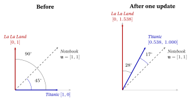
This is the same move you saw in Loss Functions & Regularizers (sampled softmax, and BPR — Bayesian Personalized Ranking) and that powers InfoNCE (the contrastive loss of that chapter, named for noise-contrastive estimation, and the workhorse of Self-Supervised & Contrastive Learning): don’t normalize over everything; contrast the positive against a few negatives.
2.3 “Meaning = location”: the famous parallelogram
The headline result that made word2vec famous: directions in the learned space line up with semantic relationships, so meaning can be done with arithmetic: \[ \mathbf{v}_{\text{king}} - \mathbf{v}_{\text{man}} + \mathbf{v}_{\text{woman}} \;\approx\; \mathbf{v}_{\text{queen}} . \]
The picture below draws it in a 2-axis cartoon of the (really a few-hundred-dimensional) space, with the points placed by hand so the arithmetic comes out exact — one axis stands for gender, one for royalty. In a trained space it holds only approximately (queen is found as the nearest word with the three input words excluded from the search; a claim from practice, not tested here), which is what the \(\approx\) says.
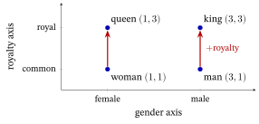
Check it by hand, one coordinate at a time: \((3-3+1,\ 3-1+1)=(1,3)\), and in full: \[ \underbrace{(3,3)}_{\text{king}}-\underbrace{(3,1)}_{\text{man}}+\underbrace{(1,1)}_{\text{woman}}=(1,3)=\underbrace{\mathbf{v}_{\text{queen}}}_{(1,3)}, \qquad \lVert\text{result}-\text{queen}\rVert=\lVert(0,0)\rVert=0 . \]
The distance between the result and queen — the length of their difference, the Euclidean distance of Linear Algebra for Machine Learning §4 — is \(0\): the result is queen itself. The relationship “\(\text{man}\!\to\!\text{king}\)” is a vector (here \((0,2)\), “add royalty”); add it to woman and you arrive at queen. Meaning became geometry.
For contrast, king and man sit \(\lVert(0,2)\rVert=2\) apart — same gender, different royalty. Cosine similarity would not do as the landing check: it compares directions only, and here king \((3,3)\) and woman \((1,1)\) point the same way — cosine \(1\) — while being different points. Distance tests whether two points coincide; cosine tests whether two arrows point the same way.
2.4 item2vec: word2vec is already a recommender
Here is the payoff. Take a user’s watch history and call it a “sentence”; call each item a “word”. Run skip-gram on millions of these “sentences” and you learn an item embedding in which co-watched items sit close together — purely from the distributional hypothesis applied to behavior. This is item2vec (Barkan & Koenigstein, 2016), and its e-commerce cousin prod2vec (Grbovic et al., 2015), which learned product vectors the same way from the purchase sequences in shoppers’ e-mail receipts.
Worked — one history, and the recommendation it gives. A user watched Titanic, The Notebook and La La Land, in that order. With a window of one item on each side, skip-gram trains on four (center, context) pairs: (Titanic, Notebook), (Notebook, Titanic), (Notebook, La La Land), (La La Land, Notebook).
This is skip-gram run literally on the history, as prod2vec does on purchase sequences; in this windowed version, order only decides which items share a window. Barkan & Koenigstein’s item2vec drops order entirely. Every ordered pair of items in the same history is a (center, context) pair, here all six, including (Titanic, La La Land), and they rank by the cosine between the items’ vectors. Either way, over millions of histories items that keep appearing together end up close.
To recommend, take the item the user just watched (or the mean of their last few) and rank every other item by its score against it, here §2.2’s \(\mathbf u_c\cdot\mathbf v_w\) (the toy keeps the dot product for continuity, where item2vec itself uses the cosine). Take the vectors of §2.2’s first worked example and a new user whose first film is Titanic, \(\mathbf v=[1,1]\). Each candidate gets one dot product: The Notebook \(\mathbf u=[1,1]\) gives \(1\cdot1+1\cdot1=2\), La La Land \(\mathbf u=[0,1]\) gives \(0\cdot1+1\cdot1=1\), Die Hard \(\mathbf u=[1,-1]\) gives \(1\cdot1+(-1)\cdot1=0\). So the user is offered The Notebook (score \(2\)) before La La Land (\(1\)) and Die Hard (\(0\)).
- No content, no ratings — just “items that keep each other company are similar”, learned by prediction.
- The result is a content-free collaborative embedding — learned only from what many users did together — the same kind of object matrix factorization and LightGCN learn, reached by the language-model route. (A language model is a model trained to predict words from the words around them — typically the next word (after The movie was, say great), or a hidden one. Skip-gram’s predict-the-neighbors task is the same kind of training; §5 scales it up.)
The bridge, stated once. Many “turn a thing into a vector” methods in modern recommender systems (RecSys) are word2vec’s idea wearing different clothes: item2vec here, the next-item models of §3.4 and §4.4, the pretrained encoders of §5. Matrix factorization and LightGCN reach the same kind of vectors by other objectives. Keep the slogan: meaning = location, learned by predicting context.
Back to Cara’s coffee and tea: the toy vectors of this section place words, and films, by the one clue ever used, shared context. Titanic and La La Land were pulled together by the context they share, Notebook; coffee and tea would be placed the same way, by the drink, cup and morning they share (§2.1).
What skip-gram does not see is order: it asks only which items sit near each other, not which came first. §3 reads sequences in order, with recurrent neural networks (RNNs) and their long short-term memory (LSTM) upgrade.
In one line: predicting the same neighbors pulls two words’ vectors together (cosine \(0\) to \(0.881\) after the one update of §2.2), and a watch history is a sentence, so, with the hand-set vectors of §2.2’s first worked example, an item2vec-style model already recommends The Notebook first (score \(2\) against \(1\) and \(0\)).
3. Sequences: RNNs and LSTMs
Embeddings turn one symbol into one vector. But a review is a sequence of words, and a watch history is a sequence of items — and order matters: “not good” \(\neq\) “good not”; Empire Strikes Back before Return of the Jedi tells a story that the reverse does not. Averaging the embeddings (a “bag of vectors”) throws order away. We need a model that reads left to right and remembers.
3.1 The Recurrent Neural Network (RNN)
An RNN keeps a running summary — a hidden state \(\mathbf{h}_t\) (“memory”), a vector — and updates it one step at a time: \[ \mathbf{h}_t \;=\; \tanh\!\big(\,W\,\mathbf{h}_{t-1} \;+\; U\,\mathbf{x}_t \;+\; \mathbf{b}\,\big). \]
Decoded, component by component (bold lower-case letters are vectors, capitals are matrices, as everywhere in the book):
- \(\mathbf{x}_t\) — the input vector at step \(t\) (the \(t\)-th word/item embedding).
- \(\mathbf{h}_{t-1}\) — the memory carried in from the previous step (the past, compressed).
- \(U\,\mathbf{x}_t\) — how the new input enters the memory (\(U\) = input-to-hidden weight matrix).
- \(W\,\mathbf{h}_{t-1}\) — how the old memory carries forward (\(W\) = hidden-to-hidden weights — the recurrent weights).
- \(\mathbf{b}\) — a bias vector (Neural Networks & Back-propagation).
- \(\tanh(\cdot)\) — applied to each entry, it squashes the sum into \((-1,1)\) so the memory can’t blow up (Neural Networks & Back-propagation).
- \(\mathbf{h}_t\) — the updated memory, used both to make a prediction now and as the input to step \(t{+}1\).
Why “recurrent.” The same weights \(W,U,\mathbf{b}\) are applied again and again at every step, and the output feeds back into the next step — the computation recurs. One small cell, unrolled across the sequence (the RNN-cell figure below).
Worked by hand with 1-number vectors — scalars, written in plain italics — so you can check every digit. Let \(W=0.5,\ U=1,\ b=0\), start \(h_0=0\), and feed the tiny sequence \(x=(+1,-1)\): \[ \begin{aligned} h_1 &= \tanh(0.5\cdot 0 + 1\cdot(+1)) = \tanh(1.0) = \mathbf{0.762},\\ h_2 &= \tanh(0.5\cdot 0.7616 + 1\cdot(-1)) = \tanh(-0.6192) = \mathbf{-0.551}. \end{aligned} \]
The memory rose to \(+0.762\) on the positive input, then the negative input pulled it down to \(-0.551\) — but not all the way to \(\tanh(-1)=-0.762\), where a memory-less cell (one that ignored \(h_1\)) would have landed: the difference is \(h_1\)’s value carried forward through \(W h_1\). That carry-over is the memory.
Order matters to the cell. Feed the same two inputs reversed, \(x=(-1,+1)\): \(h_1=\tanh(-1)=-0.762\) and \(h_2=\tanh(0.5\cdot(-0.7616)+1)=\tanh(0.6192)=+0.551\). The same inputs end at the opposite sign (an exact mirror here only because \(b=0\) and \(\tanh\) is odd), so this cell, unlike the attention of §4 (blind to order until §4.3 adds positions), tells the two orders apart.
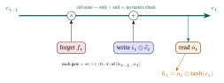
3.2 The vanishing-gradient problem
Train an RNN by back-propagation (Neural Networks & Back-propagation) and you back-propagate through time — the chain rule runs across every step. The gradient that reaches step \(1\) from a loss at step \(T\) is a product of factors, one for each step it travels back through.
What one factor is. In the scalar RNN of §3.1, a factor is how much \(h_t\) moves when \(h_{t-1}\) moves: \[ \frac{\partial h_t}{\partial h_{t-1}} \;=\; W\,(1-h_t^{2}), \]
the recurrent weight times the slope of \(\tanh\) at that step. (The slope of \(\tanh\) at a point where its output is \(h\) is \(1-h^2\); check it on a calculator at input \(1\): \((\tanh 1.001-\tanh 0.999)/0.002=0.420\), and \(1-\tanh^2 1=1-0.7616^2=0.420\).) With §3.1’s numbers, \(\partial h_2/\partial h_1=0.5\times(1-0.551^2)=0.5\times0.696=0.348\).
The slope of \(\tanh\) is never more than \(1\), so every factor here is at most \(W=0.5\). (With vectors, each factor becomes a matrix built the same way; whether the repeated product shrinks or explodes then depends on the matrix’s largest stretching factor, its largest singular value (Linear Algebra for Machine Learning §6): below \(1\) forces shrinking, above \(1\) allows explosion; this is not shown here.) If the factors are mostly \(<1\), the product shrinks toward zero; if mostly \(>1\), it explodes. To see the shape, hold one factor \(f\) fixed for \(n\) steps (this letter returns with other jobs: the forget gate \(\mathbf f_t\) of §3.3 and the sub-layer \(f\) of §4.3), so the signal left is \(f^n\) (with \(W=1.5\) and states near \(0\), where the slope is nearly \(1\), each factor is about \(1.5\)):
| factor \(f\) | \(n=5\) | \(n=20\) | \(n=50\) |
|---|---|---|---|
| \(0.5\) (shrinks) | \(0.031\) | \(9.5\times10^{-7}\) | \(8.9\times10^{-16}\) |
| \(0.95\) (nearly \(1\)) | \(0.774\) | \(0.358\) | \(0.077\) |
| \(1.5\) (explodes) | \(7.6\) | \(3{,}325\) | \(6.4\times10^{8}\) |
Three counts suffice because the shape is geometric: each extra step multiplies by the same factor, so every cell is the one to its left times \(f^{15}\) or \(f^{30}\). Below \(1\) the signal falls without a floor, above \(1\) it climbs without a ceiling, and even \(0.95\), only slightly under \(1\), keeps \(0.36\) at \(20\) steps but only \(0.077\) at \(50\).
- Vanishing gradients → the network cannot learn long-range dependencies: at \(f=0.5\) a signal that travels back 49 steps, from step 50 to step 1, arrives at about \(1.8\times10^{-15}\) of its size (the table’s last cell, for 50 steps, is \(9\times10^{-16}\)), nothing a learning step can use. The RNN effectively forgets the distant past.
- This is the same chain-rule product from Calculus for Machine Learning and Neural Networks & Back-propagation — just stretched over time, where the depth equals the sequence length. (Goodfellow et al., 2016, ch. 10, treat recurrent networks in full.)
3.3 The LSTM: a protected memory with gates
The LSTM (Long Short-Term Memory; Hochreiter & Schmidhuber, 1997, with the forget gate below added by Gers et al., 2000) greatly slows the vanishing of gradients by adding a cell state \(\mathbf{c}_t\) — a memory “conveyor belt” that runs straight through, edited only gently (a near-\(1\) multiply and an addition) — controlled by three gates. A gate is a vector of valves in \((0,1)\), produced by a sigmoid \(\sigma\) (Probability & Statistics for Machine Learning §3): \(0\) = “block”, \(1\) = “let through”, and \(\odot\) is element-wise multiply (entry by entry: \([a,b]\odot[c,d]=[ac,bd]\)).
Every gate reads \([\mathbf{h}_{t-1},\mathbf{x}_t]\): the old hidden state and the new input concatenated — glued end to end into one longer vector. With \(\mathbf{h}_{t-1}=[0.2,0.5]\) and \(\mathbf{x}_t=[1,0,3]\), \([\mathbf{h}_{t-1},\mathbf{x}_t]=[0.2,0.5,1,0,3]\). (This square bracket is gluing, not an interval.) Two letters change jobs here: \(\mathbf o_t\) below is the output gate, not §1.1’s one-hot \(\mathbf o_k\), and \(\mathbf c_t\) is the cell state, not §2.2’s context word \(c\).
Each of the three gates has its own learned weight matrix and bias vector — \(W_f,\mathbf{b}_f\) for the forget gate, likewise \(W_i,\mathbf{b}_i\) and \(W_o,\mathbf{b}_o\) — exactly like a neuron’s \(\mathbf{w}\) and \(b\). A fourth pair, \(W_c,\mathbf{b}_c\), belongs not to a gate but to the candidate \(\tilde{\mathbf{c}}_t\), which passes through \(\tanh\) instead of \(\sigma\): it carries a value in \((-1,1)\), not a valve setting in \((0,1)\). All four read the same glued vector — both the old memory and the new input: \[ \begin{aligned} \mathbf{f}_t &= \sigma(W_f[\mathbf{h}_{t-1},\mathbf{x}_t]+\mathbf{b}_f) &&\textbf{forget gate: how much old memory to keep}\\ \mathbf{i}_t &= \sigma(W_i[\mathbf{h}_{t-1},\mathbf{x}_t]+\mathbf{b}_i) &&\textbf{input gate: how much new info to write}\\ \tilde{\mathbf{c}}_t &= \tanh(W_c[\mathbf{h}_{t-1},\mathbf{x}_t]+\mathbf{b}_c) &&\textbf{candidate: the new info itself}\\ \mathbf{c}_t &= \mathbf{f}_t\odot \mathbf{c}_{t-1} + \mathbf{i}_t\odot \tilde{\mathbf{c}}_t &&\textbf{update the cell: keep + write}\\ \mathbf{o}_t &= \sigma(W_o[\mathbf{h}_{t-1},\mathbf{x}_t]+\mathbf{b}_o) &&\textbf{output gate: what to read out}\\ \mathbf{h}_t &= \mathbf{o}_t\odot \tanh(\mathbf{c}_t) &&\textbf{the readable hidden state} \end{aligned} \]
Decoded: the cell line \(\mathbf{c}_t = \mathbf{f}_t\odot \mathbf{c}_{t-1} + \mathbf{i}_t\odot\tilde{\mathbf{c}}_t\) is the whole point. The forget gate \(\mathbf{f}_t\) decides how much of the old memory to keep; the input gate \(\mathbf{i}_t\) decides how much of the new candidate \(\tilde{\mathbf{c}}_t\) to add. Because the old memory passes through by a near-\(1\) multiply and an addition (not a long chain of matrix multiplies), the gradient can flow back many steps without vanishing quickly — the cell state is a gradient highway.
Worked by hand — one step, and why the memory survives (scalars again, 1-number vectors in plain italics). Suppose the cell already carries a fact from far back, \(c_{t-1}=0.80\) (say “the subject is singular”), and this step’s input is irrelevant to it. A trained LSTM then sets its three gates (each a \(\sigma(\cdot)\in(0,1)\) of \([h_{t-1},x_t]\); values shown) so as to protect the fact — \(f_t=0.95\) (keep almost all), \(i_t=0.10\) (write almost nothing), \(o_t=0.60\) (read out a little over half). The candidate \(\tilde c_t=0.40\) is not one of them: it is a \(\tanh\) in \((-1,1)\), the new value itself, and \(i_t\) decides how much of it to write. So the cell update and readout, by hand, are: \[ \begin{aligned} c_t &= f_t\,c_{t-1}+i_t\,\tilde c_t = 0.95(0.80)+0.10(0.40)=0.760+0.040=\mathbf{0.800},\\ h_t &= o_t\,\tanh(c_t)=0.60\,\tanh(0.800)=0.60(0.664)=\mathbf{0.398}. \end{aligned} \]
Forgetting cost \(0.04\) (\(0.95\times0.80=0.76\)) and writing added \(0.04\) back (\(0.10\times0.40\)), so the memory leaves at \(0.80\). That it lands exactly where it started is a coincidence of these numbers — the point is how little it moved, where the RNN of §3.1 forced its whole state through a fresh \(\tanh\) at every step. Even with no write at all, \(20\) such steps would leave \(0.80\times0.95^{20}\approx0.29\): slow leakage, not a cliff.
And the “gradient highway” is now a number: along the direct cell path (treating the gates as fixed), the cell’s sensitivity to its own past is \(\partial c_t/\partial c_{t-1}=f_t=0.95\), so if \(f_t\) stays at \(0.95\) for \(20\) steps, a signal arrives scaled by \(0.95^{20}\approx0.36\). Held at \(f_t=0.50\) instead, it would arrive scaled by \(0.5^{20}\approx9.5\times10^{-7}\) (the first row of §3.2’s table), and at \(f_t=1\) exactly by \(1\), at the price that nothing is ever forgotten.
Compare a plain RNN given the same weight, \(W=0.95\): its factor is \(W(1-h_t^2)\) (§3.2), the weight times \(\tanh\)’s slope, and at a state of \(h_t=0.5\) that is \(0.95\times0.75=0.71\) per step, \(0.71^{20}\approx0.001\) over \(20\) steps; it would reach \(0.36\) only if every state sat at \(0\), where the slope is \(1\). So the difference is not the number \(0.95\) but where it sits: on the cell path the factor is the gate itself, with no \(\tanh\) slope multiplied in at every step, and the gate is recomputed at every step from that step’s input and the previous state, so the network can hold it near \(1\) while a fact must be kept and lower it when the fact is done.
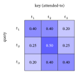
Why “Long Short-Term Memory.” An ordinary RNN has only a short-term memory (it fades within a few steps). The LSTM keeps that short-term memory but makes it last a long time — a long short-term memory. The GRU (Gated Recurrent Unit; Cho et al., 2014) is a lighter cousin that merges the gates into two, so it has three weight matrices to the LSTM’s four; on polyphonic music and speech modeling, Chung et al. (2014) found the two comparable (their result, a claim from practice, not tested here).
3.4 RecSys bridge: GRU4Rec
The GRU, written out. The recommender this section builds to, GRU4Rec (“GRU for Recommendation”, below), runs on a GRU, so here are its two gates (vs the LSTM’s three) — a reset gate \(\mathbf{r}_t\) and an update gate \(\mathbf{z}_t\), each a sigmoid of \([\mathbf{h}_{t-1},\mathbf{x}_t]\) with its own weights and bias: \[ \begin{gathered} \mathbf{r}_t=\sigma(W_r[\mathbf{h}_{t-1},\mathbf{x}_t]+\mathbf{b}_r),\qquad \mathbf{z}_t=\sigma(W_z[\mathbf{h}_{t-1},\mathbf{x}_t]+\mathbf{b}_z),\\[4pt] \mathbf{h}_t=(1-\mathbf{z}_t)\odot \mathbf{h}_{t-1}+\mathbf{z}_t\odot\tilde{\mathbf{h}}_t, \end{gathered} \]
with candidate \(\tilde{\mathbf{h}}_t=\tanh\!\big(W_h[\,\mathbf{r}_t\odot \mathbf{h}_{t-1},\,\mathbf{x}_t\,]+\mathbf{b}_h\big)\). \(W_h\) is the candidate’s own learned weight matrix; because it multiplies the (reset) old state and the input glued together, it does the job of §3.1’s \(W\) and \(U\) side by side. The update gate \(\mathbf{z}_t\) interpolates between keeping the old state and writing the new — one gate doing the LSTM’s forget+input job; the reset gate decides how much past to use when forming the candidate. (Conventions differ: Cho et al., 2014, write \(\mathbf{h}_t=\mathbf{z}_t\odot\mathbf{h}_{t-1}+(1-\mathbf{z}_t)\odot\tilde{\mathbf{h}}_t\), so their \(\mathbf{z}_t\) means keep; we follow GRU4Rec, Hidasi et al., 2016, where a large \(\mathbf{z}_t\) means write the new candidate.)
Worked by hand (scalars). Take §3.3’s situation — old state \(h_{t-1}=0.80\), update gate \(z_t=0.10\), candidate \(\tilde h_t=0.40\): \[ h_t=(1-0.10)(0.80)+0.10(0.40)=0.72+0.04=\mathbf{0.76}. \]
The reset gate acted earlier within this same step, inside the candidate: with assumed weights \(0.5\) on the old state and \(1\) on an input \(x_t=0.2\), and no bias, a reset gate \(r_t=1\) gives \(\tilde h_t=\tanh(0.5\times0.80+0.2)=\tanh(0.60)=0.537\), and \(r_t=0\) gives \(\tanh(0.2)=0.197\), the input alone, as if the session started now (the \(0.40\) above is the candidate at an in-between reset, \(r_t\approx0.56\)). A small update gate keeps \(90\%\) of the old state — the same job the LSTM’s \(f_t\approx1\), \(i_t\approx0\) did. The difference: the GRU’s keep and write weights are tied (\(1-z_t\) and \(z_t\) always sum to \(1\)), where the LSTM set its two gates independently (\(0.95\) and \(0.10\)). Fewer gates and no separate cell state: three weight matrices instead of four.
Swap “word” for “item” and an RNN becomes a session-based recommender. A session is one visit’s run of clicks, often by a visitor the site cannot identify, so there is no long history to lean on: feed the items clicked so far in the session, in order, let the hidden state summarize the session, and predict the next item. GRU4Rec (Hidasi et al., 2016) did exactly this with a GRU, an early deep sequential recommender; the attention-based SASRec of §4.4 is its successor.
In a session of clicks A, B, C, training asks the state after A to score B highest and the state after B to score C; at serving time the state after C scores every item, and the top one is offered next. The hidden state \(\mathbf{h}_t\) is the user’s “current intent” vector; score candidates by dot product with it, exactly as everywhere else in the book.
Worked — the next click. Say the state after a romance-leaning session is \(\mathbf h=[0.8,\,0.2]\) (made up). Dotted with the taste vectors of §4.2’s three films it scores Titanic \([1,0]\) at \(0.8\), The Notebook \([1,1]\) at \(1.0\) and La La Land \([0,1]\) at \(0.2\), so The Notebook is offered next. It wins partly on length, not only on direction: Titanic points closer along \(\mathbf h\) (cosine \(0.970\) against \(0.857\)), but \([1,1]\) is \(1.414\) long against \(1\), and a dot product rewards length (§4.4’s serving aside returns to this). A real system first drops the films already clicked.
In one line: a recurrent cell reads in order, but its gradient is a product of one factor per step: over \(20\) steps a factor of \(0.5\) leaves \(10^{-6}\) and a factor of \(1.5\) grows to \(3{,}325\); at the same weight \(0.95\) a plain RNN keeps about \(0.001\) (at a state of \(0.5\)) while the LSTM’s gated cell path keeps \(0.36\).
4. Attention and the Transformer
Bob’s watch history has fifty films, and the one that best explains his taste is the first. A reader that carries one memory forward step by step may have lost it by the end, and must wait for each step before starting the next. Could any film look straight at any other? This section builds that mechanism and works it by hand.
It has a price, counted in numbers: if each of \(n\) films is scored against every film, that is \(n\times n\) scores. Three films give \(3\times3=9\) scores, Bob’s fifty give \(50\times50=2{,}500\), and a history of a thousand gives \(1000\times1000=1{,}000{,}000\) (counted once here; later mentions point back). §4.1 builds the score table and §4.4 pays this bill.
RNNs read sequences, but they have two weaknesses: they are inherently sequential (step \(t\) must wait for step \(t{-}1\), so they are slow to train), and even an LSTM strains over very long ranges (§3.3’s forget gate of \(0.95\) keeps \(0.36\) of a signal over \(20\) steps but only \(0.95^{200}\approx0.00004\) over \(200\)). The fix that took over the field is attention — first added on top of RNNs for translation (Bahdanau et al., 2015), then, in the Transformer (Vaswani et al., 2017; §4.3), used in place of recurrence.
4.1 The idea: let every position look at every other
Instead of forcing all the past through one hidden state, attention lets each position look directly at every other position and take a weighted blend of them, most from the positions that match best. First, a name for the positions. Each element of the input sequence is a token — a word of a sentence (§5.3 refines this: real models cut text into word pieces) or, in a recommender, one item of a user’s history. Token \(i\) arrives as its embedding \(\mathbf{x}_i\), a row of \(d\) numbers (§1.2), for \(i=1,\dots,n\), where \(n\) is the sequence length (the number of tokens). When a sequence attends to itself like this, the operation is called self-attention.
In the history Titanic, The Notebook, La La Land there are three tokens (\(n=3\)), and self-attention will give The Notebook a new vector made of about \(0.25\) of Titanic’s, \(0.50\) of its own and \(0.25\) of La La Land’s (§4.2 computes these: \(0.248\), \(0.503\), \(0.248\)).
One token, step by step. To update token \(i\):
- Make three vectors from it. Multiply its embedding by three learned weight matrices: its query \(\mathbf{q}_i=\mathbf{x}_iW_Q\) (“what am I looking for?”), its key \(\mathbf{k}_i=\mathbf{x}_iW_K\) (“what do I offer?”), and its value \(\mathbf{v}_i=\mathbf{x}_iW_V\) (“what do I pass on if chosen?”). Queries and keys share one length, written \(d_k\), so they can be dotted; values have length \(d_v\).
- Score it against every token, itself included: \(\mathbf{q}_i\cdot\mathbf{k}_j\) for \(j=1,\dots,n\) — large when token \(j\) offers what token \(i\) is looking for. Divide each score by \(\sqrt{d_k}\) (the reason is below).
- Softmax the \(n\) scaled scores into weights \(\alpha_{i1},\dots,\alpha_{in}\): positive, summing to \(1\) (Probability & Statistics for Machine Learning §3).
- Blend the values: token \(i\)’s output is \(\text{out}_i=\alpha_{i1}\mathbf{v}_1+\alpha_{i2}\mathbf{v}_2+\dots+\alpha_{in}\mathbf{v}_n\) — every token’s value, weighted by how well its key matched \(i\)’s query.
Reading step 1. A row times a matrix: entry \(a\) of \(\mathbf{x}_iW_Q\) is \(\mathbf{x}_i\) dotted with column \(a\) of \(W_Q\) — Linear Algebra for Machine Learning’s matrix–vector rule (§3), turned on its side (§3.1 wrote a matrix times a column, \(W\mathbf h\); the attention papers write a row times a matrix, \(\mathbf xW\), and this chapter follows each). For instance, The Notebook’s embedding \([1,1]\) times the matrix \(\begin{bmatrix}1&0\\0&0\end{bmatrix}\) (the \(W_Q\) of §4.2’s learned-projection example), whose columns are \([1,0]\) and \([0,0]\), is \(\big[\,[1,1]\cdot[1,0],\ [1,1]\cdot[0,0]\,\big]=[1,0]\): its query.
So \(W_Q\) and \(W_K\) are \(d\times d_k\) and \(W_V\) is \(d\times d_v\). From here \(\mathbf x_i\) is the embedding (§1.2’s \(\mathbf v_k\)), \(\mathbf v_i\) the value vector and \(V\) the value matrix, no longer the vocabulary size. §4.2 runs these four steps with numbers.
Why query / key / value. The names come from a database lookup: a database matches a query against stored keys and returns the matching value. Self-attention does this softly: the query matches all keys to a degree, and you get a weighted blend of all values. A hard lookup for The Notebook would return weights \(0,1,0\) (its own value only); the soft one returns \(0.248,\,0.503,\,0.248\) (§4.2).
All tokens at once — the formula. Stack the embeddings as the rows of a matrix \(X\) (\(n\) rows, \(d\) columns). Then the queries are the rows of \(Q=XW_Q\) (\(n\) rows, \(d_k\) columns), the keys the rows of \(K=XW_K\) (\(n\times d_k\)), and the values the rows of \(V=XW_V\) (\(n\times d_v\)). \(K^\top\) (\(K\) transposed — its rows turned into columns) holds each key as a column, so entry \((i,j)\) of \(QK^\top\) is row \(i\) of \(Q\) times column \(j\) of \(K^\top\): exactly \(\mathbf{q}_i\cdot\mathbf{k}_j\). Every raw score of step 2 (before the division by \(\sqrt{d_k}\)), for every token, sits in one \(n\times n\) table, and steps 2–4 for all \(n\) tokens together are the central formula of this chapter: \[ \mathrm{Attention}(Q,K,V) \;=\; \mathrm{softmax}\!\left(\frac{Q\,K^\top}{\sqrt{d_k}}\right) V , \]
whose row \(i\) is \(\text{out}_i\): an \(n\times d_v\) matrix, one new vector per token.
Decoded, component by component:
- \(Q\,K^\top\) — the \(n\times n\) table of scores: entry \((i,j)=\mathbf{q}_i\cdot\mathbf{k}_j\), how well token \(j\)’s key matches token \(i\)’s query (dot product = alignment, Linear Algebra for Machine Learning §4).
- \(\div\sqrt{d_k}\) — scale down by the square root of the key length (why, just after this list).
- \(\mathrm{softmax}(\cdot)\) — applied to each row separately, turning token \(i\)’s \(n\) scores into its weights \(\alpha_{ij}\) (each row sums to \(1\)); the matrix of all these weights is called \(A\).
- \(\cdots\,V\) — row \(i\) of the weight matrix times \(V\) is \(\sum_j\alpha_{ij}\mathbf{v}_j\), the weighted average of the value vectors: step 4 for every token at once. Each token’s output is a blend of everything it chose to attend to.
Why the square root. Suppose each of the \(d_k\) coordinates of \(\mathbf{q}\) and \(\mathbf{k}\) is a random number of typical size \(1\) (mean \(0\), standard deviation \(1\)), independent of the others. Each product \(q_ak_a\) then has mean \(0\) and variance \(1\times1=1\) (with coin values \(\pm1\), every product is \(\pm1\): variance \(1\)), and since the variances of independent pieces add (Probability & Statistics for Machine Learning §8.3), the sum of \(d_k\) of them has variance \(d_k\).
Its typical size, its standard deviation (§1 of that chapter), is therefore \(\sqrt{d_k}\), not \(d_k\): positive and negative products partly cancel (the argument of Vaswani et al., 2017, footnote 4). Dividing by \(\sqrt{d_k}\) brings the scores back to a typical size of about \(1\) at any \(d_k\); this division is why they named it scaled dot-product attention (their §3.2.1). The shape in two sizes: at \(d_k=16\) the typical size is \(\sqrt{16}=4\) and at \(d_k=64\) it is \(\sqrt{64}=8\), so quadrupling \(d_k\) only doubles the size, and dividing each by its own \(\sqrt{d_k}\) returns both to about \(1\) (the next paragraph uses \(d_k=100\), size \(10\)).
Feel the spike it prevents. At \(d_k=100\) a score of \(10\) is typical, and raw scores \([10,0,0]\) softmax to \([0.99991,\,0.00005,\,0.00005]\) — the token sees only one neighbor, and nudging its top score from \(10\) to \(11\) moves that weight only to \(0.99997\), so training has almost nothing to push on (tiny gradients). Divided by \(\sqrt{100}=10\), the scores become \([1,0,0]\), which softmax to \([0.58,\,0.21,\,0.21]\); the same nudge (\(1.0\to1.1\)) now moves the top weight to \(0.60\).
Why three different matrices? The worked example of §4.2 starts with all three set to the identity \(I\) (the matrix that leaves a vector unchanged, so \(Q=K=V=X\)) to isolate the mechanism, but in practice each is a learned projection — machine-learning jargon for multiplying by a learned matrix, which may stretch, rotate or mix coordinates (any linear map, not only the “shadow” projection of Linear Algebra for Machine Learning §4; Deisenroth et al., 2020, treat both).
That lets a token advertise one thing (its key), search for another (its query), and pass on a third (its value) — e.g. a verb can look for its subject (query \(\ne\) key) yet contribute its tense (value). Step 1’s \([1,1]\to[1,0]\) was one: it keeps the first coordinate (§4.2 names it romance) and drops the second.
With no projections (\(Q=K=V=X\)) attention can only match on raw similarity, and even one shared learned matrix keeps the match symmetric (\(i\) scores \(j\) exactly as \(j\) scores \(i\)). Separate \(W_Q\) and \(W_K\) let a token look for something other than what it offers (shown in §4.2’s learned-projection example, where two films score each other differently) — and a separate \(W_V\) lets it pass on something else again.
The cost. Because every token attends to every other, self-attention builds an \(n\times n\) score table — its cost is \(O(n^2)\) in the sequence length \(n\) (read “order \(n\) squared”: the work grows in proportion to \(n^2\), ignoring constant factors). Feel it: a \(10\)-token sentence costs \(10^2=100\) scores; a \(1{,}000\)-token document costs the \(\mathbf{10^6}\) counted in the opening of this section — and doubling the length to \(2{,}000\) quadruples it to \(4\times10^6\). Three sizes are enough because every token scores every token, so the count is \(n\times n\) at any \(n\). That quadratic cost is the price for the parallelism and the direct long-range links (an RNN does \(n\) steps: linear in \(n\), but strictly one after another), and it is what research on efficient Transformers (variants that avoid building the full \(n\times n\) table) and on longer contexts has worked to reduce since 2017.
4.2 Self-attention, worked by hand
Take a three-film history (it returns in Large Language Models and Recommendation): a user watched \(t_1=\) Titanic, \(t_2=\) The Notebook, \(t_3=\) La La Land (here \(t_k\) labels the \(k\)-th token, not the time step \(t\) of §3), with tiny 2-D taste embeddings on two made-up axes, axis 1 = “romance” and axis 2 = “musical/drama” (toy numbers chosen to show the mechanism, not a judgment of the films, and new taste vectors, not §2.2’s word2vec vectors), as the rows of \(X\); here \(n=3\) and \(d=d_k=d_v=2\): \[ X=\begin{bmatrix} 1&0\\ 1&1\\ 0&1\end{bmatrix} \quad(\mathbf{x}_1=\text{Titanic}=[1,0],\ \mathbf{x}_2=\text{Notebook}=[1,1],\ \mathbf{x}_3=\text{La La Land}=[0,1]). \]
To isolate the mechanism, use identity projections (\(W_Q=W_K=W_V=I\)), so every token’s query, key and value all equal its embedding and \(Q=K=V=X\) (in a real model these are learned). With \(d_k=2\), \(\sqrt{d_k}=1.414\).
One token first — §4.1’s four steps for The Notebook (\(t_2\)). (1) \(\mathbf{q}_2=\mathbf{k}_2=\mathbf{v}_2=[1,1]\). (2) Its scores against the three keys are \([1,1]\cdot[1,0]=1\), \([1,1]\cdot[1,1]=2\) and \([1,1]\cdot[0,1]=1\); divided by \(1.414\) they become \(0.707,\ 1.414,\ 0.707\). (3) Softmax: \(e^{0.707}=2.028\), \(e^{\sqrt2}=4.113\), \(e^{0.707}=2.028\), summing to \(8.169\), so the weights are \(0.2483,\ 0.5035,\ 0.2483\). (4) Blend the values: \(0.2483\,[1,0]+0.5035\,[1,1]+0.2483\,[0,1]=[0.7517,\ 0.7517]\approx[0.752,\ 0.752]\) (from the unrounded weights; the four-decimal weights above give \(0.7518\)).
All three tokens at once. The scaled scores \(S=XX^\top/\sqrt2\) and the softmax weights \(A\) (each row sums to 1, up to rounding) come out to — the middle row is the one just computed:
| scaled score \(S\) → | \(t_1\) | \(t_2\) | \(t_3\) | weight \(A\) on \(t_1\) | \(t_2\) | \(t_3\) | |
|---|---|---|---|---|---|---|---|
| \(t_1\) query | 0.707 | 0.707 | 0.000 | → | 0.401 | 0.401 | 0.198 |
| \(t_2\) query | 0.707 | 1.414 | 0.707 | → | 0.248 | 0.503 | 0.248 |
| \(t_3\) query | 0.000 | 0.707 | 0.707 | → | 0.198 | 0.401 | 0.401 |
Then each output row is its weights \(\times\) the value vectors \(V=X\): \[ \text{out} = A\,X =\begin{bmatrix} 0.802 & 0.599\\[1pt] 0.752 & 0.752\\[1pt] 0.599 & 0.802\end{bmatrix}. \]
Read the middle row (The Notebook, \(t_2\)): its scaled self-score is highest (\(1.414\), because \([1,1]\cdot[1,1]=2\)), so after softmax it attends mostly to itself (\(0.503\)) and equally to its two neighbors (\(0.248\) each). Its output \([0.752,0.752]\) is therefore a blend of all three — fitting, since The Notebook points between the axis-1-only Titanic and the axis-2-only La La Land (cosine \(0.707\) with each). Each token’s new vector is a context-aware mix of the whole sequence, computed in one parallel shot — no stepping. A recommender reads these rows: §4.4 scores the next film by dotting the last row with each candidate, as §3.4 did with \(\mathbf h_t\).
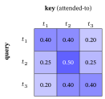
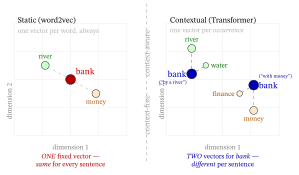
What the learned projections add (why \(Q,K,V\) are separate). We set \(W_Q=W_K=W_V=I\) to expose the mechanism; a trained Transformer instead learns three different matrices — \(Q=XW_Q\), \(K=XW_K\), \(V=XW_V\) — so it learns what to match on (via \(W_Q,W_K\)) separately from what to pass along (via \(W_V\)). Keep the three films and \(W_V=I\), but take \[ W_Q=\begin{bmatrix}1&0\\0&0\end{bmatrix},\qquad W_K=\begin{bmatrix}0&0\\1&0\end{bmatrix}. \] For a film \(\mathbf{x}=[r,m]\) (romance \(r\), musical/drama \(m\); this \(r\) is a coordinate, not the reset gate \(\mathbf{r}_t\) of §3.4), the row-times-column rule gives \(\mathbf{x}W_Q=[r,0]\) and \(\mathbf{x}W_K=[m,0]\): the query carries only the asker’s romance and the key only the candidate’s axis-2 side, so the score \(\mathbf{q}_i\cdot\mathbf{k}_j=r_i\,m_j\) asks “is \(i\) romantic, and is \(j\) high on musical/drama?”. The keys of the three films are \(\mathbf{k}_1=[0,0]\), \(\mathbf{k}_2=[1,0]\), \(\mathbf{k}_3=[1,0]\), and each film’s query, scores, weights and output come out as
| film | query \(\mathbf q\) | scores | weights | output |
|---|---|---|---|---|
| Titanic \([1,0]\) | \([1,0]\) | \(0,\,1,\,1\) | \(0.198,\,0.401,\,0.401\) | \([0.599,\,0.802]\) |
| Notebook \([1,1]\) | \([1,0]\) | \(0,\,1,\,1\) | \(0.198,\,0.401,\,0.401\) | \([0.599,\,0.802]\) |
| La La Land \([0,1]\) | \([0,0]\) | \(0,\,0,\,0\) | \(1/3\) each | \([0.667,\,0.667]\) |
With identity projections Titanic kept \(0.401\) on itself and gave La La Land the least (\(0.198\)); now it gives itself the least and La La Land as much as The Notebook — it looks toward the films high on axis 2, a relationship raw similarity cannot express (\(\mathbf{x}_1\cdot\mathbf{x}_3=[1,0]\cdot[0,1]=0\)). Its self-score of \(0\) is neutral, not repulsive: weight moves off Titanic only because the other two scores are higher. La La Land, with \(r=0\), has an all-zero query, so all its scores are \(0\) and it spreads its attention evenly. That is the freedom training buys — attention on a learned relationship, not just raw similarity. The walk-through above is the special case \(W_Q=W_K=W_V=I\); everything else is the same softmax-blend, on projected vectors.
The jump that matters: static → contextual embeddings. word2vec (§2) gives each word one fixed vector, whatever the sentence. Self-attention gives each token a different vector per occurrence, a blend of its neighbors, so “bank” by a river and “bank” with money end up with different representations. Put The Notebook, \([1,1]\), into two different two-film histories (identity projections, \(d_k=2\)). Its scaled scores against the other film, then itself, are \([0.707,\,1.414]\) in both, so the weights are \([0.330,\,0.670]\) in both, and the blends differ:
- beside Titanic: \(0.330\,[1,0]+0.670\,[1,1]=[1.000,\,0.670]\), pulled toward romance;
- beside La La Land: \(0.330\,[0,1]+0.670\,[1,1]=[0.670,\,1.000]\), pulled toward axis 2 (musical/drama).
Same token, same static vector, two different contextual vectors, where word2vec would hand back \([1,1]\) both times. BERT (Bidirectional Encoder Representations from Transformers), built to read text, and GPT (Generative Pre-trained Transformer), built to write it, are the two Transformer families of §5.
§3’s RNN makes vectors contextual too, since \(\mathbf{h}_t\) depends on every word before it, but it reads in one direction, one step at a time. A bidirectional RNN adds a second pass from right to left, still step by step (Schuster & Paliwal, 1997), and ELMo (Embeddings from Language Models; Peters et al., 2018) built contextual word vectors this way just before BERT. Self-attention lets every token look at every other token directly and all at once; that, together with the parallel training it allows (§4.3), is why the Transformer took over.
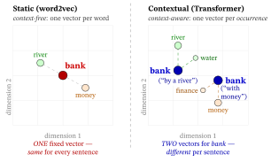
4.3 Multi-head attention, positional encoding, the block
Multi-head attention. One attention is one “point of view”. Run \(H\) of them in parallel — each one a head, with its own learned \(W_Q,W_K,W_V\) — then concatenate their outputs (glue them end to end, like the LSTM’s \([\mathbf{h}_{t-1},\mathbf{x}_t]\) in §3.3) and mix that long vector back to the embedding length \(d\) with one more learned matrix, \(W_O\) (\(O\) for output). Why: one head can match on overall taste, another on “is the asker romantic and the candidate high on musical/drama?” (§4.2’s two heads), another, once positions are added (below; a number for it follows the rotary paragraph), on recency — different relations at once.
In the original Transformer \(d=512\) and \(H=8\) heads of length \(512/8=64\), so the eight outputs glue back to \(512\) and together cost about one full-width head; here each head keeps length \(2\) for readability.
Worked — two heads for The Notebook. §4.2 has already run two heads, each with value length \(d_v=2\), without naming them: the identity one, then the learned-projection one. Head 1, with the identity projections, gave The Notebook \([0.752,\ 0.752]\); head 2, with the learned \(W_Q,W_K\) of §4.2’s learned-projection example, gave \([0.599,\ 0.802]\). Concatenated, they make one \(4\)-number vector, \([0.752,\ 0.752,\ 0.599,\ 0.802]\). A \(W_O\) with \(4\) rows and \(2\) columns maps it back to length \(d=2\).
Take, for illustration, the \(W_O\) that simply adds the two heads coordinate by coordinate (a trained \(W_O\) learns its own mix): \[ [0.752,\ 0.752,\ 0.599,\ 0.802]\begin{bmatrix}1&0\\0&1\\1&0\\0&1\end{bmatrix}=[\,0.752+0.599,\ \ 0.752+0.802\,]=[\,1.351,\ 1.554\,]. \] The musical/drama coordinate ends higher (\(1.554\) against \(1.351\)) because head 2 looked toward the films high on that axis; the identity head kept the two equal. So the multi-head layer hands on vectors of the same length it received, however many heads it runs — which is what lets the Transformer block (one layer of the network, assembled at the end of this section) be stacked.
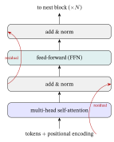
Positional encoding. Look again at \(\mathrm{softmax}(QK^\top/\sqrt{d_k})V\): shuffle the tokens and every output is just shuffled too. Reverse §4.2’s history to La La Land, The Notebook, Titanic: the outputs come out \([0.599,\,0.802]\), \([0.752,\,0.752]\), \([0.802,\,0.599]\), the same three rows reversed, so the model cannot tell the two orders apart. Attention is blind to order. But order matters (§3). So we add a position signal to each token’s embedding: for each position, a vector of the same length \(d\), added entry by entry. The original Transformer uses fixed sinusoids: \[ PE(\text{pos},2i)=\sin\!\Big(\tfrac{\text{pos}}{10000^{2i/d}}\Big),\qquad PE(\text{pos},2i+1)=\cos\!\Big(\tfrac{\text{pos}}{10000^{2i/d}}\Big). \]
Decoded, component by component:
- \(\text{pos}\) — the token’s position in the sequence, a whole number counted from \(0\), like the coordinates, so \(\text{pos}=1\) is the second token (the first gets \([0,1,0,1]\)). The \(d=4\) example uses \(\text{pos}=1\) and \(3\); the films below sit at \(\text{pos}=0,1,2\) with \(d=2\); Exercise 10 does \(\text{pos}=2\) at \(d=4\) and \(\text{pos}=1\) at \(d=6\).
- \(d\) — the embedding length of §1.2, so the position vector can be added to the embedding.
- \(2i\) and \(2i+1\) — which coordinate of the position vector is being filled, counting from \(0\). Coordinates come in pairs and \(i\) names the pair: \(i=0\) for coordinates \(0\) and \(1\), \(i=1\) for coordinates \(2\) and \(3\), and so on up to \(i=d/2-1\). The even coordinate of each pair gets a sine, the odd one a cosine. (This \(i\) counts coordinate pairs; it is not §4.1’s token index, nor the input gate \(\mathbf i_t\) of §3.3.)
- \(10000^{2i/d}\) — how slowly pair \(i\)’s wave turns. The angle \(\text{pos}/10000^{2i/d}\) grows by \(1/10000^{2i/d}\) per position, so the wave repeats every \(2\pi\cdot10000^{2i/d}\) positions — its wavelength.
- Wavelengths. Pair \(0\) repeats every \(2\pi\approx6.28\) positions, and the wavelengths grow pair by pair up to \(2\pi\cdot10000^{(d-2)/d}\), nearly \(10000\cdot2\pi\) once \(d\) is large (\(60{,}611\) positions at \(d=512\); at this example’s \(d=4\) the two pairs repeat every \(6.28\) and \(628\) positions; Vaswani et al., 2017).
- Why \(10000\). It is simply a choice that spreads the waves from fast to very slow.
- \(\sin\), \(\cos\) — of an angle measured in radians, the unit in which a full turn is \(2\pi\approx6.28\) (not \(360^\circ\)). To check the numbers below, set a calculator to RAD, not DEG.
Worked, \(\text{pos}=1\), \(d=4\). Pair \(i=0\) has \(2i/d=0\) and \(10000^{0}=1\), so its two coordinates are \(\sin(1)=0.841\) and \(\cos(1)=0.540\). Pair \(i=1\) has \(2i/d=2/4=1/2\) and \(10000^{1/2}=100\), so its coordinates are \(\sin(1/100)=\sin(0.01)=0.010\) and \(\cos(0.01)=1.000\). Together, \(PE(1,\cdot)=[\,0.841,\ 0.540,\ 0.010,\ 1.000\,]\). (In degree mode a calculator gives \(\sin(1^\circ)=0.017\) instead — the degree trap.) At \(\text{pos}=3\), \(PE=[\,0.141,\ -0.990,\ 0.030,\ 1.000\,]\): the fast pair’s cosine went from \(0.540\) to \(-0.990\), the slow pair’s sine only from \(0.010\) to \(0.030\). So each position gets a fingerprint no other position shares (pair \(0\) never repeats exactly on whole positions, because \(2\pi\) is irrational); added to the embedding, it shifts every query and key, so the scores now depend on position.
The figure below plots the four coordinates of this \(d=4\) code over the positions: the fast pair on the left, the slow pair over a far longer range on the right.
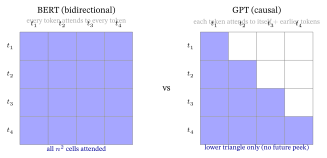
Worked — the films, with positions. At the films’ \(d=2\), positions \(0,1,2\) get \(PE=[0,1]\), \([0.841,\,0.540]\), \([0.909,\,-0.416]\). Add them to §4.2’s films and run attention again with identity projections (queries, keys and values all equal the embedding, as in §4.2): Titanic’s output is \([1.499,\,1.263]\) when it opens the history (scaled scores \(1.414,\,2.391,\,1.056\), weights \(0.230,\,0.610,\,0.160\)) and \([1.841,\,0.289]\) when it closes it (history La La Land, The Notebook, Titanic), where without positions it was \([0.802,\,0.599]\) both times. The two orders now differ.
GPT and SASRec (the Transformer recommender of §4.4) learn their position vectors instead (Radford et al., 2018; Kang & McAuley, 2018), and many recent LLMs — the LLaMA models, an openly released family, among them (Touvron et al., 2023) — use rotary position embeddings, RoPE for short (Su et al., 2024), which rotate each coordinate pair of the query and key by an angle proportional to the position instead of adding a vector to the input: the same purpose, served inside attention. In 2-D, turn \(\mathbf q=\mathbf k=[1,0]\) by \(1\) radian per position: at positions \((2,1)\) their score is \(\cos1=0.540\), at \((5,4)\) again \(0.540\), at \((3,1)\) \(\cos2=-0.416\) — the score depends only on how far apart the two tokens are.
Worked — a recency head. Rotate \(\mathbf q=\mathbf k=[1,0]\) by one radian per position and let the last of three films, at position \(2\), score positions \(2,1,0\): \(\cos0,\cos1,\cos2=1,\ 0.540,\ -0.416\), which after the division by \(\sqrt2\) are \(0.707,\ 0.382,\ -0.294\) and softmax to the weights \(0.478,\ 0.346,\ 0.176\). The nearer the film, the more weight: a head that looks mostly at the recent past. (A toy: at one radian per position the weights fall with distance only up to about three positions, and real models mix many angles.)
The Transformer block. One layer stacks self-attention → add & norm → feed-forward → add & norm (“add & norm”: add the sub-layer’s input back to its output, then normalize — both decoded below), repeated \(N\) times (\(N=6\) in the original Transformer, \(12\) in BERT-base) to form the Transformer encoder: the stack that turns input tokens into context-aware vectors (\(n\) tokens in, \(n\) vectors out, as in §4.1; a \(7\)-token input is still \(7\) vectors after BERT-base’s twelfth block). §4.2’s attention and §4.3’s two heads are the first sub-layer of block 1, without the position signal; §5 meets its partner, the decoder, which writes text one token at a time. Three pieces beyond attention deserve a decode:
The feed-forward network (FFN). A small per-token MLP (multi-layer perceptron — Neural Networks & Back-propagation’s stack of neuron layers) — \(\mathrm{FFN}(\mathbf{x})=\max(0,\,\mathbf{x}W_1+\mathbf{b}_1)\,W_2+\mathbf{b}_2\) (a ReLU layer up to a wider dimension — four times wider in the original, \(512\to2048\to512\) — then back down; ReLU, the rectified linear unit, is \(\max(0,z)\) applied to each entry) — applied to each position independently. Attention mixes tokens; the FFN transforms each one nonlinearly.
The FFN holds about two thirds of each block’s parameters (at the usual 4× width and \(d=512\): \(2.10\) million against attention’s \(1.05\) million); in a whole model the embedding table also counts, so the share is lower (about \(46\%\) of GPT-2 small: \(56.7/124.4=0.456\), from \(56.7\) million of the \(124.4\) million weights in the released model, which Radford et al., 2019, list as 117M).
Worked — one FFN step. Take \(\mathbf x=[1,1]\), a \(W_1\) whose columns are \([1,0],[-1,1],[0,-1],[1,1]\) (twice as wide here, four times in the original) and zero biases: \(\max(0,\mathbf xW_1)=[1,0,0,2]\), four numbers from two; a \(W_2\) that adds the pairs brings it back to \([1,2]\). Research reads the FFN as where much of the model’s stored knowledge lives (Geva et al., 2021; not tested here).
Residual connection (“add the input back”). Each sub-layer computes \(\mathbf{x}+f(\mathbf{x})\), not \(f(\mathbf{x})\) (He et al., 2016, introduced the idea for image networks; here \(f\) is the sub-layer’s own computation, attention or the FFN, not §3.3’s forget gate). Why it helps is the LSTM’s trick again (§3.3): the derivative of \(\mathbf{x}+f(\mathbf{x})\) carries a \(+1\) (for vectors, the identity matrix \(I\)), so the gradient has a direct path straight back — a gradient highway that lets very deep stacks train.
In the Pre-LN arrangement (LN for LayerNorm, a step that rescales each token’s vector to a standard size, decoded below; Pre-LN places it before each sub-layer: Where the norm goes, below), through \(20\) sub-layers the direct path multiplies the gradient by exactly \(1\) twenty times; the same twenty sub-layers without the skip, each with slope \(0.5\) (§3.2’s \(W\)), would keep \(0.5^{20}\approx10^{-6}\) of it (the vanishing of §3.2).
In the original Post-LN order (LayerNorm after each sub-layer) a LayerNorm sits on that path at every block, so the direct path no longer carries the gradient back unchanged (Where the norm goes, below).
LayerNorm (Ba et al., 2016). It standardizes each token’s vector — shifts and scales its entries to mean \(0\) and standard deviation \(1\), then applies a learned rescaling (the normalization of Neural Networks & Back-propagation §7: \([2,4,6]\to[-1.22,\,0,\,1.22]\)) — which keeps training stable (a claim from practice, not tested here). At this chapter’s \(d=2\) it sends two different entries to \(-1\) and \(+1\), the larger to \(+1\) (\([1.351,1.554]\to[-1,1]\), but Titanic’s \([0.802,0.599]\to[1,-1]\)), and two equal ones, like The Notebook’s \([0.752,0.752]\), to \([0,0]\): it keeps only which coordinate is larger, which is why the toy examples skip it.
Where the norm goes. The order above — normalize after each sub-layer — is the original Post-LN design: out \(=\mathrm{LN}(\mathbf x+f(\mathbf x))\). Most modern large models normalize before each sub-layer instead (a claim from practice, not tested here), the Pre-LN design: out \(=\mathbf x+f(\mathrm{LN}(\mathbf x))\), often with RMSNorm, a cheaper variant of LayerNorm (Zhang & Sennrich, 2019), as in the LLaMA models; here \(\mathbf x\) is a token’s vector and \(f\) the sub-layer.
Take \(\mathbf x=[2,4,6]\) and a sub-layer output \([0,0,3]\) (assume, for the toy, that \(f\) returns this either way): Post-LN passes on \(\mathrm{LN}([2,4,9])\), which is \([-1.019,\,-0.340,\,1.359]\), so \(\mathbf x\) reaches the next block only through a normalization; Pre-LN passes on \([2,4,9]\), \(\mathbf x\) itself plus the sub-layer’s output, while \(f\) sees \(\mathrm{LN}(\mathbf x)=[-1.225,\,0,\,1.225]\).
Xiong et al. (2020) show that at initialization (before any training step, with the weights at their random starting values) the Post-LN placement gives large gradients near the output layer, so it needs a slow learning-rate warm-up (very small steps at first, raised over the first thousands of updates); Pre-LN’s gradients are well behaved and it trains without one.
Why “Transformer.” Vaswani et al. titled the 2017 paper “Attention Is All You Need” — they removed recurrence and convolution (sliding filters, as in vision models, which the best translation models of the day also ran along the sentence) entirely; the name is often read as attention transforming each token’s representation using the others, though the paper itself never explains the choice. No recurrence means the whole sequence is processed in parallel during training, one of the things that let these models scale to the sizes we now call LLMs.
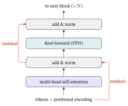
4.4 RecSys bridge: SASRec and BERT4Rec
Replace “word” with “item” once more and the Transformer becomes a widely used architecture for sequential recommendation, which predicts a user’s next item from their ordered history (§3.4’s task, without the one-visit limit); that it is widely used is a claim from practice, not tested here. Which of the two Transformer recommenders below wins is not settled: Sequential & Session-Based Recommendation §5 reports one replication in which SASRec was clearly ahead.
- SASRec (Self-Attentive Sequential Recommendation; Kang & McAuley, 2018) runs a causal Transformer (the causal mask of §5.1) over the watch history (each position may attend only to itself and earlier items) and predicts the next item — a self-attention successor to GRU4Rec. With the causal mask §4.2’s rows become Titanic \([1,0,0]\), The Notebook \([0.330,\,0.670,\,0]\) (it cannot see La La Land, so its output is \([1.000,\,0.670]\), pulled toward romance) and La La Land unchanged \([0.198,\,0.401,\,0.401]\).
- BERT4Rec (“BERT for Recommendation” — BERT being the bidirectional text model built in §5.1; Sun et al., 2019) uses a bidirectional (masked) Transformer, §4.2’s full table: it masks items in the history and predicts them from both sides, sometimes stronger than the left-to-right SASRec, sometimes not. At serving time BERT4Rec appends a mask after the last item and reads its prediction there.
How a next-item prediction is actually made. The Transformer turns the history into a context vector \(\mathbf{h}\) (in SASRec, the top block’s output at the last position — a running summary, like §3’s \(\mathbf{h}_t\)); the model then scores every candidate item \(j\) (here \(j\) runs over the whole catalog, not the history) by \(\mathbf{h}\cdot\mathbf{e}_j\), a dot product with item \(j\)’s learned embedding \(\mathbf{e}_j\).
BERT4Rec turns these scores into next-item probabilities with a softmax over the catalog, trained by cross-entropy: §2.2’s skip-gram output layer again (often called a scoring head, a different use of the word from §4.3’s attention heads), now at the top of a sequence model. SASRec trains with exactly §2.2’s negative-sampling loss with \(k=1\): one randomly drawn negative item per position. The output side is word2vec’s machinery again.
Worked — the next film. With the causal mask, §4.2’s history ends at La La Land’s output \(\mathbf h=[0.599,\,0.802]\); taking each film’s \(\mathbf e_j\) to be its §4.2 embedding (SASRec shares one item table between input and output), the three films score \(0.599\), \(1.401\), \(0.802\), and read as probabilities, a softmax gives \(0.224\), \(0.501\), \(0.275\) (a real system first removes films already watched; the loss below uses a watched film only to show the arithmetic). For illustration, SASRec’s \(k=1\) loss with The Notebook as the positive and Titanic as the negative is \(-\ln\sigma(1.401)-\ln\sigma(-0.599)=1.257\).
The “causal vs bidirectional” choice between them is exactly the GPT-vs-BERT choice we turn to next.
Serving aside — L2-normalizing before scoring. The dot product \(\mathbf{h}\cdot\mathbf{e}_j\) that scores candidates is sensitive to vector length (its norm \(\lVert\mathbf{e}_j\rVert\)): double a vector and every dot product it takes part in doubles. So an item with a long embedding (often, in practice, a popular item whose embedding has been updated many more times; a pattern this chapter does not test) can score high from its length alone: an item vector \(\sqrt2\approx1.41\) times longer than an equally well-aligned one scores \(1.41\) times higher (when the score is positive).
A common fix is to L2-normalize: divide each vector by its length (its Euclidean, or L2, length: Linear Algebra for Machine Learning §1), so every vector has length \(1\). The Notebook’s \([1,1]\) becomes \([0.707,\,0.707]\). Do it to both \(\mathbf{h}\) and every \(\mathbf{e}_j\) before taking the dot product; it then equals the cosine similarity, which compares direction only.
With §4.4’s \(\mathbf h=[0.599,\,0.802]\) the raw scores \(1.401\) (The Notebook) and \(0.802\) (La La Land) become cosines \(0.990\) and \(0.801\): the ranking holds, but the lead shrinks from \(1.75\times\) to \(1.24\times\). (It also discards any genuine popularity signal the length carried, and a model is best trained the way it will be served.) Exercise 11 lets you measure the effect on another intent vector.
Normalization at serving time is cheap: scale the catalog’s embedding table once, offline. It is common in production retrieval, where an approximate nearest-neighbor (ANN) search finds the catalog vectors closest to \(\mathbf h\) without scoring every item (built in Training and Serving a Recommender §7). For unit vectors the largest dot product is the nearest point, since \(\lVert\mathbf a-\mathbf b\rVert^2=2-2\,\mathbf a\cdot\mathbf b\) (e.g. \([0.707,\,0.707]\) and \([1,0]\): \(2-2(0.707)=0.586\)), which is why normalizing fits it.
Back to Bob. With attention, his fiftieth film scores his first directly: one hop, where a recurrent reader passes the signal through \(49\) steps, which at §3.3’s LSTM factor of \(0.95\) would leave \(0.95^{49}\approx0.081\) of it. The price is §4.1’s score table, \(50^2=2{,}500\) scores for his history.
In one line: self-attention gives each token a blend of all the tokens (weights \(0.248\), \(0.503\), \(0.248\) for The Notebook) at an \(n^2\) cost (\(10^6\) scores for \(1{,}000\) tokens), and SASRec and BERT4Rec score the next film by dotting the resulting vector with each candidate.
5. Pretraining and LLMs: BERT, GPT, and the frozen encoder
You have a movie’s reviews and want one vector for them, or a model that writes. Where do such models come from? From the attention network of §4, the Transformer, trained to guess words in a very large amount of text. That training goal gives the model its name: a language model (§2.4) is any model trained to predict a token (a word or word piece, §5.3) from the tokens around it — the next one, or a hidden one.
A large language model (LLM) does this with a big Transformer, today often with billions of weights: BERT-base, of §5.1, has 110 million and was pretrained on 3.3 billion words (BooksCorpus, a collection of unpublished novels, with 800 million plus English Wikipedia with 2,500 million; Devlin et al., 2019), and the largest GPT-2 has 1.5 billion (Radford et al., 2019). The corpus sizes are the papers’ figures, a claim from practice, not tested here.
The count of §4.3 shows where the weights sit: the feed-forward layers hold about \(46\%\) of GPT-2 small’s \(124.4\) million, nearly half, so in this model most of the size is not in attention; the other \(124.4-56.7=67.7\) million weights split into about \(28.3\) million in the attention layers (\(4\cdot768^2\) per layer, times \(12\) layers) and about \(39.4\) million in the embedding tables.
An LLM is made by pretraining the Transformer at scale: train it on a huge text corpus with a self-supervised objective (labels come free from the text itself: hide great in The movie was great and the sentence itself holds the answer, so no one has to label anything; this is Loss Functions & Regularizers §11’s self-supervised learning, developed in Self-Supervised & Contrastive Learning), then reuse the result, often frozen (its weights kept fixed; §5.2).
Real models first split text into subword tokens, word pieces chosen by a recipe such as byte-pair encoding (BPE, built by hand in §5.3). So a “token” is not quite a “word”: a rare word becomes a few sub-pieces. We say “word” for simplicity until §5.3 builds a tokenizer by hand.
Two families differ in the objective and the attention pattern: an encoder that reads text into vectors (BERT) and a decoder that writes text one token at a time (GPT).
5.1 BERT (encoder) vs GPT (decoder)
- BERT — Bidirectional Encoder Representations from Transformers (Devlin et al., 2019). Because every token sees the whole sentence, BERT is an encoder: great at understanding text and turning it into rich vectors. Its objective is masked language modeling:
- pick about 15% of the tokens (in a 512-token input, about 77) and predict them from both sides: The movie was [MASK] and fun → great, read from was on the left and and fun on the right;
- most picked tokens are replaced by a [MASK] symbol (80%; 10% get a random token and 10% stay as they are; the 15% and the 80/10/10 split are Devlin et al.’s recipe, a claim from practice, not tested here);
- a second objective, next-sentence prediction (does B follow A?), was later often dropped.
- GPT — Generative Pre-trained Transformer: the name later given to the model of Radford et al. (2018), whose paper speaks of “generative pre-training”. Objective: next-token prediction — predict the next word from the left context only (a causal mask). From The movie was great training gets three examples at once: The → movie, The movie → was, The movie was → great. Because it only looks left, GPT can generate text one token at a time. And because it turns its vectors back into text, token by token, GPT is called a decoder — the name of the generating half of the original 2017 translation Transformer (the aside at the end of §5.4), whose masked self-attention it keeps. This is the family “LLM” usually means today.
The architectural difference that splits them is the attention mask — which tokens each token may look at (their training objectives differ too, as above). BERT lets every token see every token; GPT lets a token see only itself and earlier ones. The figure below shows both masks for four tokens.
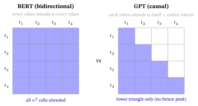
In the formula, a blocked cell’s score is set to \(-\infty\) before the softmax; \(e^{-\infty}=0\), so its weight is exactly \(0\) and the open cells share all the weight. On §4.2’s three films under the causal mask (the rows §4.4 used for SASRec, now with the reason they hold): Titanic sees only itself, weights \([1,0,0]\), output \([1,0]\); The Notebook sees Titanic and itself, weights \([0.330,\,0.670,\,0]\), output \([1.000,\,0.670]\) (the “beside Titanic” numbers of the static → contextual box); La La Land sees all three and is unchanged, \([0.198,\,0.401,\,0.401]\), output \([0.599,\,0.802]\).
The causal mask is what lets GPT train on generation’s task. Training predicts every position of a sentence in one parallel pass (§4.3), and the mask keeps each training prediction as blind as generation will be; §5.4 adds that it also keeps earlier keys and values fixed. The same pair, masks and objectives both, reappears in RecSys: BERT4Rec (bidirectional, predicts masked items) vs SASRec (causal, predicts the next item), §4.4.
5.2 From pretraining to use — and the bridge this book’s recommenders use most
A pretrained LLM is used in three common ways, from most to least training:
Fine-tuning — keep training it on your labeled task (e.g. TALLRec, a method that fine-tunes an LLM on a small set of recommendation examples; Large Language Models and Recommendation §2.1).
Full fine-tuning trains every weight; TALLRec instead trains only a small set of added weights (LoRA, short for Low-Rank Adaptation: small extra matrices trained beside the frozen original weights; Hu et al., 2022; Bao et al., 2023, as those papers report, not tested here), which is much of why it is affordable.
How small, by one count. Take a \(768\times768\) weight matrix, the size in a 768-wide layer such as BERT-base’s (an illustration, not TALLRec’s setting): it holds \(768\cdot768=589{,}824\) numbers. A rank-8 adapter (rank \(8\): the update is squeezed through \(8\) numbers per input) is two thin matrices, \(768\times8\) and \(8\times768\), whose product stands in for an update of the full matrix. It adds \(768\cdot8+8\cdot768=12{,}288\) numbers: \(12288/589824=0.0208\), about \(2.1\%\) of that matrix.
At rank \(2\) the adapter is \(3{,}072\) numbers (\(0.52\%\)) and at rank \(64\) it is \(98{,}304\) (\(16.7\%\)): a larger rank lets the update change the matrix in more independent directions and costs in proportion.
Not shown here: which matrices of a whole model carry adapters, the share over the whole model, whether the rank \(8\) is TALLRec’s own choice, and that an adapter trained this way matches full fine-tuning (that is each paper’s claim).
In-context / few-shot prompting — freeze it (keep its weights fixed: no more training) and instead write a few worked examples (“shots”; Brown et al., 2020) into the prompt — the input text you hand the model — and let it continue the pattern. The examples live in the input’s context, not in the weights: hence “in-context”. No training, but one large-model call per request.
A two-shot prompt: Titanic → romance. Die Hard → action. La La Land →. A large model typically continues with musical, though it was shown the task only through the two examples in its input (a claim from practice, not tested here).
As a frozen encoder — run text through it once and keep the output vector. No training; one pass per item, offline. Here “encoder” names a role, not §5.1’s architecture: any pretrained model run once over the text with its output vector kept, a BERT-style encoder or a GPT-style decoder alike (Qwen3-Embedding, named in the box below, is an embedding model built on an LLM, as its model card says; not tested here).
One vector per text, not per token. An encoder returns one output vector per token — §4.2’s three films came out as three rows. To get a single vector for the whole text, the usual recipes are to average the token vectors (mean pooling) or to read the output of a special summary token that BERT places at the start of every input — the CLS (classification) token, written [CLS] (Devlin et al., 2019). On §4.2’s three outputs, standing in for a text’s three tokens, mean pooling gives \[
\tfrac13\big([0.802,\ 0.599]+[0.752,\ 0.752]+[0.599,\ 0.802]\big)=\tfrac13\,[2.153,\ 2.153]=[0.718,\ 0.718].
\] That is one vector for the whole input.
That third use is the bridge the enhancer line of recommenders rests on, with one condition. A raw pretrained model’s pooled hidden state is not a good similarity vector: nothing in its training made cosine track meaning (a claim from practice, not tested here). A text-embedding model is such an encoder trained further, with a contrastive loss on pairs of texts that should match, so that matched pairs end up close and others far (the loss is InfoNCE, built in Self-Supervised & Contrastive Learning §3.2 on graph views; a text-embedding model applies the same kind of loss to pairs of texts); only then may the output be called the semantic vector.
The frozen text encoder = the semantic vector RecSys consumes. Take a movie’s reviews, or an LLM-written profile of a movie or of a user (a few sentences on what the movie offers or what the user likes, drawn from the movie’s text or the user’s history; Generating Features with Large Language Models), push it through a frozen encoder, and out comes one fixed semantic embedding of that text (\(\mathbf s_i\) for an item, \(\mathbf s_u\) for a user), a vector of typically several hundred to a few thousand numbers (a made-up toy of length \(3\): \(\mathbf s_i=[0.2,\,-0.5,\,0.1]\); Implementation Choices §2’s table lists real sizes from 128 to 8,192) — meaning = location, one last time. Two methods of Large Language Models and Recommendation use it for a profile.
- RLMRec, a method that enhances an existing recommender with LLM-derived text vectors (that chapter’s §3), aligns it with the collaborative embedding \(\mathbf e_i\) (or \(\mathbf e_u\); the item or user vector learned from interactions, like §4.4’s item vectors).
- KAR, the Knowledge Augmented Recommendation framework of that chapter’s §2.3, condenses it through a small trained adapter (a small extra network, trained while the encoder stays frozen, that reshapes the vector for the backbone) and feeds the result into its backbone.
In both methods the backbone is the ordinary recommender that does the final scoring (in that chapter’s §3 worked case, RLMRec on a LightGCN that scores a user and an item by a dot product). The expensive LLM runs offline; the recommender keeps serving at its usual cost.
So the LLM-as-enhancer line — where the LLM only enriches a classical recommender’s inputs and the classical model still does the recommending (Large Language Models and Recommendation §2.3) — runs, in RLMRec and KAR, two of this section’s models: a GPT-style LLM that writes the profiles, one per item and one per user (§5.4’s decode loop), and a frozen encoder that turns each profile into its vector, \(\mathbf{s}_i\) or \(\mathbf s_u\) (§2’s meaning = location, built by §4’s Transformer, pretrained per §5). No magic — just this chapter’s lineage, scaled up.
→ Which encoder, in practice? “Push it through a frozen encoder” raises the practitioner’s real next question — which one? For the current (mid-2026) open-source choices — embedding models (e5, BGE-M3, Qwen3-Embedding), how to read the Massive Text Embedding Benchmark (MTEB) leaderboard, a public ranking of text encoders across many tasks, and the Matryoshka and quantization levers (two ways to shrink an embedding: with a Matryoshka-trained model, keep only its first coordinates, say the first 256 of 1,024, 4× smaller; with quantization, store each number in fewer bits, say 8 instead of 32, again 4× smaller) — see the Implementation Choices appendix §2.
In practice. For turning items or metadata into embeddings, reach for a current open text encoder (the Implementation Choices appendix lists mid-2026 options) rather than training one from scratch — a pretrained encoder brings what it learned from billions of words of text; training only a small output layer on top (a scoring head, in §4.4’s sense) while the encoder stays frozen costs a fraction of training from zero; fine-tuning the encoder as well (item 1) costs more and can help more (these comparisons are claims from practice, not tested here). And always use the model’s own tokenizer (next): another tokenizer may cut a word into pieces this model never saw, or hand it an ID it learned for a different piece, and nothing raises an error.
5.3 Subword tokenization: the practitioner’s literal first step
Ann types a film title containing a word the model has never seen. A model keeps a fixed list of the words it knows, its vocabulary, and that list cannot grow without limit. What should the model do with a word it does not know? This section builds the usual answer, cutting text into reusable pieces, and runs it by hand on a toy corpus (a small body of sample text).
Before any of this runs, raw text must become a sequence of token IDs: each token’s row number in the model’s vocabulary (§1.1’s numbering). A vocabulary that lists the as row 1 and movie as row 2 turns the movie into \([1,2]\). For a recommender this is the first step of §5.2’s pipeline: an item’s title and reviews become token IDs before the LLM (large language model) that profiles the item, or the frozen encoder (a pretrained model run once, its weights not trained further), sees them.
Modern Transformer models do not tokenize by whole words. A word-level vocabulary cannot cope with the long tail (every typo, name or new word becomes the out-of-vocabulary token). That token, written <UNK> (for unknown; BERT writes it [UNK]), is one shared symbol that keeps nothing of the word’s meaning. A character-level vocabulary makes sequences long: The movie was great is 4 words but 19 characters, almost 5× as many tokens and, by §4.1’s \(n^2\), about 23× as many attention scores. The modern compromise is subword tokenization: keep frequent words whole, but break rare ones into reusable pieces (below, a toy tokenizer keeps low whole and cuts the rarer lowest into low + e + s + t).
The workhorse is byte-pair encoding (BPE). Why the name: it began as a 1994 data-compression trick (Gage, 1994) that repeatedly replaces the most frequent adjacent pair of bytes with a new symbol (in ababc the pair ab occurs twice, so it becomes a new symbol Z: ZZc) — a byte being one 8-bit number, from \(0\) to \(255\), the unit computers store text in (a plain English letter takes one byte).
Sennrich et al. (2016) adapted the idea to cut text into word pieces, merging characters instead of bytes. The recipe: start from individual characters, then greedily merge the most frequent adjacent pair into a new token — always the currently most frequent pair, never undoing a merge — over and over, until you hit a target vocabulary size.
Worked by hand (countable). Take a toy corpus of two word-types — low seen 5 times and lowest seen 2 times — and write each as a character sequence with an end-of-word marker _ (so the tokenizer can tell low the word from low inside lowest). The starting vocabulary is the 7 distinct characters l o w e s t _:
l o w _ (x5)
l o w e s t _ (x2)Now merge the most frequent adjacent pair, twice:
| step | most-frequent adjacent pair | count | corpus after the merge |
|---|---|---|---|
| 1 | o,w \(\to\) ow |
7 | l ow _ (×5), l ow e s t _ (×2) |
| 2 | l,ow \(\to\) low |
7 | low _ (×5), low e s t _ (×2) |
(Count merge 1 by hand: o w appears once in low_ \(\times5\) and once in lowest_ \(\times2\), so \(5+2=7\). l o ties it at \(7\); real implementations break such ties by a fixed rule — here, the pair whose first symbol comes later in the alphabet — so the order in the table above is reproducible. Merging l o first would also end at low after two merges.)
Two merge rules were learned, in order: o+w, then l+ow. The vocabulary grew from 7 characters to 9 tokens. Real vocabularies are far larger: about \(30{,}000\) tokens in BERT’s WordPiece tokenizer (Devlin et al., 2019; WordPiece is described below) and \(50{,}257\) in GPT-2’s byte-level BPE, which Radford et al. (2019) build from \(256\) base bytes; the released tokenizer files split the rest into \(50{,}000\) learned merges and \(1\) end-of-text token. Some recent large language models use several times that (a claim from practice, not tested here).
The payoff — an unseen word. A word never in the training corpus, say lows, is tokenized by replaying the learned rules in order on l o w s _:
start: l o w s _
apply o+w: l ow s _
apply l+ow: low s _ -> tokens [ low , s , _ ]lows becomes 3 tokens, all in the vocabulary, and the stem low is the same piece it shares with low and lowest — so the model reuses everything it already learned about that stem. That is the answer to Ann’s problem: a word the model has never seen is spelled out of pieces it knows. Number the toy vocabulary _=1, e=2, l=3, o=4, s=5, t=6, w=7, ow=8, low=9 (the order is a choice); then lowest → [low, e, s, t, _] → IDs [9, 2, 5, 6, 1], the list the model actually reads.
This is why Titanic is one token in BERT’s vocabulary but an unfamiliar surname such as Przybylski splits into several (checked against the 30,522-entry vocabulary of bert-base-uncased, which lower-cases its input, with BERT’s greedy longest-match rule). There titanic is one token and pr, ##zy, ##by, ##ls, ##ki are five; the ## marks a piece that continues a word. Common strings survive as whole pieces; rare ones fall back to smaller, shared ones.
Two relatives: WordPiece (BERT’s tokenizer; Schuster & Nakajima, 2012) merges the pair that most raises the likelihood of the training text rather than the most frequent pair; on the toy corpus a common approximation of that gain (not the paper’s own formula), \(\text{count}(ab)/(\text{count}(a)\,\text{count}(b))\), scores e s and s t at \(0.5\) against \(0.143\) for o w, because e, s and t never occur apart. Unigram (Kudo, 2018) works the other way round: it starts from a large vocabulary and prunes the pieces that matter least. SentencePiece (Kudo & Richardson, 2018) is a library that runs BPE or Unigram directly on raw text, spaces included.
Why a “subword” beats a whole word. Whole-word vocabularies drown in the long tail; characters make sequences too long. Subwords sit in between: a fixed-size vocabulary that spells almost any word out of known pieces, so an unseen word costs a few more tokens, not an
<UNK>.What guarantees that every word is spellable is the base vocabulary. Byte-level tokenizers, such as GPT-2’s (Radford et al., 2019), seed it with all \(256\) possible bytes, so every string can be written before a single merge is learned: no
<UNK>at all. Bytes cover everything because in UTF-8 (the 8-bit Unicode Transformation Format), the usual encoding, every character takes 1 to 4 bytes (é takes 2, ệ takes 3, Nguyễn 8).Tokenizers whose base units are characters, BERT’s WordPiece among them, keep an
<UNK>token ([UNK]in BERT) for any word containing a character outside their vocabulary.
5.4 How a decoder actually generates text
Ann asks a model to finish The movie was, and the model can name only one next word at a time. How does it write a whole sentence, and why is that not hopelessly slow? This section traces the loop that does it, then counts the work saved by the key-value cache, a store of what earlier steps already computed.
A GPT-style decoder does not emit a sentence in one shot. Generation is autoregressive, “regressing on itself”: each step’s input includes the model’s own earlier outputs (The movie was → great; then The movie was great → and). One step has three moves: (1) the decoder ends in §2.2’s softmax over the whole vocabulary, giving every token a probability; (2) pick one token — the most probable (its argmax, Probability & Statistics for Machine Learning §3) or one drawn at random with those probabilities; (3) append it to the input and run the model again on the longer sequence. Repeat until the model emits a special stop token (<end> below), which means the text is finished.
The trace below shows the loop, and the figure after it draws it.
prompt: "The movie was"
step 1: run model -> next token "great" -> "The movie was great"
step 2: run model -> next token "and" -> "The movie was great and"
step 3: run model -> next token "..." -> ... (until <end>)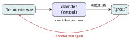
Suppose the softmax gives three candidate next tokens the probabilities of §2.2, \(0.665\), \(0.245\) and \(0.090\). The argmax always picks the first; sampling picks it \(66.5\%\) of the time, the second \(24.5\%\) and the third \(9.0\%\), so one prompt can continue differently on each run. Real systems reshape this choice with a sampling temperature (a divisor that flattens or sharpens the probabilities), with top-\(k\) or top-\(p\) cut-offs (keep only the likeliest tokens) and with instruction tuning (further training on prompt-and-answer pairs); this chapter does not cover them.
The key–value (KV) cache — why this is not absurdly slow. Naively, every step re-runs the model on the whole prefix, so to produce \(T\) tokens (we write \(T\) for the number of generated tokens, to keep it apart from the input sequence length \(n\) of §4) you re-encode \(1+2+\cdots+T=\tfrac{T(T+1)}{2}=O(T^2)\) token-passes (one token-pass = one token pushed once through every block of the model), counting from a one-token prompt as the table below does.
But a token’s key and value vectors (§4.1), in every layer, never change once computed: under the causal mask (§5.1) no token looks at a later one, so appending new tokens cannot change the earlier ones. Implementations therefore store them — the KV-cache (K for keys, V for values) — and at each step push only the one new token through. Generating \(T\) tokens then costs about \(T\) new-token passes, not \(T(T+1)/2\), as the table below counts.
| generate \(T\) tokens | token-passes through the stack | order |
|---|---|---|
| without KV-cache (re-encode the prefix) | \(1+2+3+4=10\) (for \(T{=}4\)) | \(O(T^2)\) |
| with KV-cache (one new token each step) | \(1+1+1+1=4\) (for \(T{=}4\)) | \(O(T)\) |
Three sizes are enough because both counts are exact sums (\(1+2+\cdots+T\) against \(T\)), not estimates. At \(T=4\) the cache already saves \(2.5\times\); at \(T=10\) it is \(55\) passes against \(10\), \(5.5\times\); at \(T=1{,}000\) it saves about \(500\times\) (\(500{,}500\) passes against \(1{,}000\)). A longer prompt only shifts the count: with the three-token prompt “The movie was”, four new tokens cost \(3+4+5+6=18\) passes without the cache and \(3+1+1+1=6\) with it — \(3\times\).
The cache also cuts the attention arithmetic, though not to linear: without it, each step recomputes the scores of every earlier token as well, counting only the cells the causal mask leaves open, \(T(T+1)(T+2)/6\) in all (\(20\) at \(T=4\), about \(167\) million at \(T=1{,}000\)); with it, each new token compares its query only with the cached keys, \(1+2+\cdots+T\) in all (\(10\) and \(500{,}500\)), which still grows like \(T^2\), §4.1’s quadratic cost.
Its price is memory: one key and one value vector per token in every layer; for a 7-billion-weight model (32 layers, \(d=4{,}096\), 2 bytes per number; Touvron et al., 2023) that is \(2\times32\times4{,}096\times2=524{,}288\) bytes per token, half a mebibyte (MiB), or one gibibyte (GiB) for a \(2{,}048\)-token conversation; a MiB is \(2^{20}\) bytes and a GiB \(2^{30}\).
Back to Ann: her model finishes The movie was one token per pass, appending each choice and running again, and the cache cuts every pass after the first down to one new token pushed through the stack (its attention still reads all the cached keys).
Aside — cross-attention (encoder→decoder). The original 2017 Transformer was an encoder–decoder for translation: the decoder ran a second attention whose queries come from the decoder but whose keys/values come from the encoder’s output — cross-attention, the decoder “reading” the source sentence. The decoder-only LLMs and the encoder-only/causal recommenders this chapter targets (BERT4Rec, SASRec) drop that block, so we only name it; the attention machinery is §4.1’s, just with \(Q\) from one sequence and \(K,V\) from another.
| model kind | what a recommender does with it | key point |
|---|---|---|
| frozen encoder (BERT-style, or an LLM-based embedder, §5.2) | embed item and user text offline (\(\mathbf s_i\) for items, \(\mathbf s_u\) for users) | one vector per text (mean pooling or [CLS]) |
| GPT-style decoder | generate text (profiles, explanations), one token per pass | the KV-cache makes it affordable |
| tokenizer | turn text into token IDs before either model | always the model’s own |
In one line: a BERT-style encoder reads both ways and a GPT-style decoder only leftwards, a frozen encoder turns a text into one vector (mean pooling gave \([0.718,\,0.718]\) for §4.2’s three outputs), and the KV-cache turns \(T(T+1)/2\) token-passes into \(T\) (\(10\) against \(4\) at \(T=4\)).
6. Exercises
Work these by hand — the numbers are kept tiny on purpose. Each exercise reuses the set-up of an example worked above (its toy catalog, vectors, matrices or formula); most put fresh numbers into it, and a few reuse the example’s numbers and say so. Full worked solutions are in the Solutions appendix at the back of the book.
(compute) — one-hot bags. In a 5-movie catalog (§1.1) a user who has watched movies \(1\) and \(3\) is summarized by the bag \(\mathbf p=\mathbf o_1+\mathbf o_3\), the sum of the two one-hot vectors. (a) Compute \(\mathbf p\cdot\mathbf o_3\) and \(\mathbf p\cdot\mathbf o_2\). (b) Compute the cosine of \(\mathbf p\) with \(\mathbf o_3\) and with \(\mathbf o_2\). (c) Movie \(2\) is a romance like movie \(1\), which the user watched. Does either number show it, and why?
(compute) — cosine of two words. Give two words the cartoon 2-D vectors \(\mathbf{v}_{\text{coffee}}=[4,3]\) and \(\mathbf{v}_{\text{tea}}=[3,4]\) (axes = “morning-drink-ish”, “hot-beverage-ish”). Compute the cosine similarity \(\cos(\mathbf{v}_{\text{coffee}},\mathbf{v}_{\text{tea}})\) (§1.1; Linear Algebra for Machine Learning §4). Is the value near \(+1\), and what would the distributional hypothesis (§2.1) predict about two words this close?
(concept) — what negative sampling saves. (a) Under the full softmax of §2.2, does the cost of one (center, context) pair depend on the vocabulary size \(V\) or on the number of negatives \(k\), and why? (b) A vocabulary has \(V=50{,}000\) words: how many dot products does one pair cost under the full softmax, and how many under negative sampling with \(k=10\) negatives, and how many times fewer is that? (c) If \(V\) grows to \(500{,}000\) at the same \(k=10\), what happens to the saving, and why?
(compute) — skip-gram probabilities. A center word has vector \(\mathbf v_w=[1,1]\) (§2.2); three context candidates have \(\mathbf u_A=[2,1]\), \(\mathbf u_B=[0,1]\), \(\mathbf u_C=[-1,1]\). (a) Score each by \(\mathbf u_c\cdot\mathbf v_w\). (b) Turn the three scores into \(P(c\mid w)\) with the softmax (as in §2.2, pretend the vocabulary is just these three words, \(V=3\)). (c) Which context word is the model most sure of, and does it match which vector best aligns with \(\mathbf v_w\)?
(compute) — LSTM cell, one step. §3.3 traced a step that kept a memory; now trace a different step, again with 1-number vectors (scalars). The cell holds \(c_{t-1}=0.50\), and this step’s gates are \(f_t=0.40\), \(i_t=0.90\), candidate \(\tilde c_t=0.80\), and output gate \(o_t=0.50\). (a) Compute the new cell state \(c_t=f_t\,c_{t-1}+i_t\,\tilde c_t\). (b) Compute the readout \(h_t=o_t\tanh(c_t)\) (\(\tanh(0.90)=0.716\) and \(\tanh(0.95)=0.740\) bracket what you need). (c) In one sentence, contrast this step with §3.3’s worked step: which is the LSTM remembering, and which is it overwriting?
(compute) — the square root in the scale. Self-attention divides the scores by \(\sqrt{d_k}\) (§4.1). A token’s raw scores against three keys of length \(d_k=16\) are \([6,2,0]\). (a) Scale them. (b) Softmax the raw scores and the scaled scores. (c) Raise the top raw score from \(6\) to \(7\), the same nudge in both versions (the scaled scores are then \([7,2,0]/4\)), and recompute the top weight in each. By how much does it move in the raw version and in the scaled version, and which version leaves the token more to learn from?
(compute) — self-attention, one row. A new history of three films on §4.2’s two axes has \(X=\left[\begin{smallmatrix}2&0\\1&1\\0&1\end{smallmatrix}\right]\), the first film a strong romance. Use identity projections (\(Q=K=V=X\)) and \(d_k=2\), and do the first row (\(\mathbf{x}_1=[2,0]\)): (a) form its three scaled scores \(\mathbf{x}_1\cdot\mathbf{x}_j/\sqrt{2}\) for \(j=1,2,3\); (b) softmax them into attention weights; (c) take the weighted blend of the value rows to get its output vector; (d) which film gets the most weight, and which the least?
(compute) — three projections of one token. A token has embedding \(\mathbf{x}=[2,1]\) (romance \(2\), musical/drama \(1\)); use the learned projections of §4.2, \(W_Q=\begin{bmatrix}1&0\\0&0\end{bmatrix}\), \(W_K=\begin{bmatrix}0&0\\1&0\end{bmatrix}\), \(W_V=I\). (a) Compute \(\mathbf{q}=\mathbf{x}W_Q\), \(\mathbf{k}=\mathbf{x}W_K\), \(\mathbf{v}=\mathbf{x}W_V\). (b) Are they three different vectors? (c) Compute \(\mathbf{q}\cdot\mathbf{k}\). Then take a second token \(\mathbf{x}'=[0,2]\), compute its key \(\mathbf{k}'=\mathbf{x}'W_K\) and \(\mathbf{q}\cdot\mathbf{k}'\). Which key does \(\mathbf q\) match more strongly, and does the raw similarity (\(\mathbf{x}\cdot\mathbf{x}\) for the token with itself, \(\mathbf{x}\cdot\mathbf{x}'\) for the pair) rank the two the same way?
(concept) — two heads mixed. Two heads give a token the outputs \([0.5,\,1.0]\) and \([1.0,\,0.5]\) (made up). (a) Concatenate them and mix with the \(W_O\) of §4.3 that adds the two heads coordinate by coordinate. (b) A third head adds the output \([0.0,\,0.5]\), and \(W_O\) gets two more rows in the same pattern. What is the mixed vector now, and how long is it compared with \(d=2\)? (c) Why must the mixed vector have the original length \(d=2\) rather than length \(6\), and what does the block do with it next?
(extend) — sinusoidal positions. Using the sinusoidal formula of §4.3 with \(d=4\), the chapter evaluates the positional encoding at \(\text{pos}=1\) as \(PE=[0.841,\,0.540,\,0.010,\,1.000]\). At \(\text{pos}=2\), its first two coordinates, \(PE(2,0)\) and \(PE(2,1)\), are the films’ \(PE(2)\) of §4.3; compute the other two, \(PE(2,2)=\sin(2/10000^{1/2})\) and \(PE(2,3)=\cos(2/10000^{1/2})\), and say why they barely move. (Note \(10000^{1/2}=100\); the angles are in radians, so set your calculator to RAD, not DEG.) Then, at \(d=6\) and \(\text{pos}=1\), compute the third pair’s two coordinates, \(PE(1,4)\) and \(PE(1,5)\) (\(i=2\); \(10000^{2/3}=464.16\)).
(apply) — ranking by dot product or by cosine. A sequential recommender (SASRec, §4.4) turns a watch history into one intent vector \(\mathbf{h}=[1,3]\) on §4.2’s two taste axes (here leaning toward axis 2), and scores each candidate item \(j\) by the dot product \(\mathbf{h}\cdot\mathbf{e}_j\) — exactly the dot-product scoring of §2.4’s toy recommender and §4.4’s next-item layer. Score the chapter’s three item vectors \(\mathbf{e}_j=[1,0]\) (Titanic), \([1,1]\) (Notebook), \([0,1]\) (La La Land). (a) Rank them by the raw dot product. (b) Re-rank by cosine similarity. Do the rankings agree? If not, which item changes place, and is the cause its length or its direction (see §4.4’s serving aside and Linear Algebra for Machine Learning §4)?
(extend) — BPE on an unseen word. Apply §5.3’s two learned BPE merge rules —
o+w, thenl+ow, in that order — to the new unseen wordslow, writtens l o w _. (a) Replay the rules step by step and list the final tokens. (b) Separately, in the original two-word corpus (low×5,lowest×2), what is the count of the adjacent paire,s, and why is it not the pair BPE merges first?(extend) — the KV-cache table, longer. Extend §5.4’s KV-cache table to \(T=5\) generated tokens. (a) Without the cache, each step re-encodes the whole prefix, so the total is \(1+2+3+4+5\) token-passes — how many is that? (b) With the cache, each step pushes only the one new token — how many passes total? (c) Compute the ratio of (a) to (b). (d) Write the ratio for any \(T\), and find the \(T\) at which the cache saves \(10\times\).
(compute) — what the KV-cache stores. A model has \(40\) layers and vectors of length \(d=5{,}120\), stored at \(2\) bytes per number. (a) How many bytes does the cache hold per token (§5.4)? (b) How many gibibytes (GiB, \(2^{30}\) bytes) for one \(2{,}048\)-token sequence? (c) The model has \(13\) billion weights at \(2\) bytes each: about how many \(2{,}048\)-token sequences can be served at once before the cache outweighs the weights? (d) A decoder is changed so that each token may also see the one token after it (a mask one cell wider than the causal one), and a seventh token is appended to a \(6\)-token text. How many of the six cached keys are still valid in layer \(1\), and how many in layer \(2\) (layer-\(2\) keys are computed from layer-\(1\) outputs)?
(compute) — mean pooling. An encoder returns four token vectors \([2,0]\), \([0,4]\), \([1,1]\) and \([3,3]\) for a review. (a) Mean-pool them (§5.2). (b) Compute the cosine of the pooled vector with Titanic \([1,0]\) and with La La Land \([0,1]\). Which film does the review lean toward?
(compute) — attention masks. A history has four items, and the raw scaled scores of item \(3\) against items \(1\) to \(4\) are \([0,1,1,9]\). (a) Under the causal mask of §5.1, which cell is blocked, and what are item \(3\)’s weights? (b) Without the mask, what are the weights? (c) Using the weights of (b), what does a model trained to predict item \(4\) gain from those weights, and what is it unable to do at serving time? (d) BERT picks \(15\%\) of the tokens of a \(200\)-token input (§5.1): how many are picked, and how many of those get [MASK], a random token, and no change under the \(80/10/10\) split?
(compute) — where the norm goes. Take \(\mathbf x=[1,2,6]\) and a sub-layer that doubles its input, \(f(\mathbf z)=2\mathbf z\) (§4.3). (a) Compute \(\mathrm{LN}(\mathbf x)\) (mean \(0\), standard deviation \(1\), dividing by \(d=3\)). (b) Compute the Post-LN output \(\mathrm{LN}(\mathbf x+f(\mathbf x))\). (c) Compute the Pre-LN output \(\mathbf x+f(\mathrm{LN}(\mathbf x))\). (d) Repeat (b) and (c) for \(10\mathbf x=[10,20,60]\), with the same \(f\). Which output changed, and what is its last entry?
(compute) — sampling. A decoder’s next-token probabilities for four tokens \(a,b,c,d\) are \(0.5,\,0.3,\,0.15,\,0.05\) (§5.4). (a) Which token does argmax pick? (b) With sampling, what is the probability that two independent runs both pick \(a\)? (c) What is the probability that two independent runs pick different tokens at this step? (d) Over \(1{,}000\) runs, about how often is \(c\) picked?
7. The bridge to RecSys: one table, then the hand-off
Cara has now met every technique in this chapter, and her team’s recommender is SASRec, a Transformer over watch histories. Which of the chapter’s techniques is it built on, and where is it built in full? This section is one map from each idea to its recommender, then the hand-off to the chapter that uses all of them.
Each main representation technique in this chapter has a recommender counterpart. This is the map; Cara’s SASRec sits in the self-attention row, built in §4.4 and in full in Sequential & Session-Based Recommendation §4–§5:
| Representation idea (this chapter) | RecSys incarnation | Where it lives |
|---|---|---|
| Multi-hot genre vectors (§1.1’s one-hot with several slots set) and TF-IDF (named in §1.3; built in Traditional Recommender Systems §2) | content-based filtering (recommend items whose content resembles what the user liked) | Traditional Recommender Systems |
| word2vec predict-based embedding (§2) | item2vec, prod2vec | §2.4 |
| RNN / LSTM / GRU (§3) | GRU4Rec (session-based) | §3.4; in full, Sequential & Session-Based Recommendation §3 |
| Self-attention / Transformer (§4) | SASRec (causal), BERT4Rec (bidirectional) | §4.4; in full, Sequential & Session-Based Recommendation §4–§5 |
| Pretrained encoder → text embedding (§5) | RLMRec semantic view, KAR features | Large Language Models and Recommendation §2.3, §3 |
| Beyond this chapter: embedding → discrete codes | TIGER (Transformer Index for Generative Recommenders; Rajput et al., 2023): it gives each item a short tuple of code words (its “Semantic ID”) and predicts the next item’s code the way a language model predicts text | Large Language Models and Recommendation §2.2 |
| Generative LLM (§5: decoder-only like GPT, or encoder–decoder like Google’s T5, a text-to-text Transformer; Raffel et al., 2020) | LLM-as-recommender — the LLM outputs the recommendation itself (TALLRec; P5, Geng et al., 2022, which casts five families of recommendation task — rating, sequential recommendation (the next item), explanation, review, direct recommendation — as text-to-text for one T5 model) | Large Language Models and Recommendation §2.1 |
The hand-off to Large Language Models and Recommendation. That chapter opens by assuming only that an LLM “maps text to a vector and can also write text”. Inside that box: a symbol becomes a vector because we embed it (§1) and train it to predict context (§2); a sequence is read by attention (§4); the model is a pretrained Transformer (§5); and “maps text to a vector” is a frozen encoder read-out (§5.2).
The four roles it describes (the LLM as the recommender itself, as a generator of item codes, as an enhancer of a classical model, and as a planning agent) are four ways to wire that machinery in. The enhancer/graph line (RLMRec-style) is, in practice, often the cheapest to deploy (a claim from practice, not tested here; that chapter’s §2): the LLM runs offline for meaning, while a graph-based recommender serves online for the collaborative signal.
In one line: six of the table’s seven rows pair an idea of §§1–5 with a recommender (the seventh, TIGER, points beyond this chapter); after the first row, what separates them is how the context is read, not the idea that meaning is location.
That is the arc of this chapter, and of the representation half of the book, in one sentence: turn things into vectors whose geometry carries meaning, learn those vectors with ever more expressive models (counts → word2vec → RNN → Transformer → LLM), and recommend by comparing them.
8. Glossary
| Term | Plain meaning |
|---|---|
| One-hot vector | A length-\(V\) vector \(\mathbf{o}_k\), \(1\) in slot \(k\), \(0\) elsewhere; encodes identity but no similarity (all pairs orthogonal; §1.1). |
| Embedding | A learned, short (low-dimensional), dense vector for a discrete symbol (§1.2); meaning = location in the space. |
| Static vs contextual | word2vec gives one fixed vector per word; a Transformer gives a different vector per occurrence (context-dependent; §4.2). |
| Distributional hypothesis | “You shall know a word by the company it keeps” (Firth 1957; Harris 1954) — words in similar contexts have similar meanings; word2vec turns this into similar vectors (§2.1). |
| word2vec | Predict-based word embeddings trained on word–context prediction: skip-gram predicts the context from a word, CBOW the word from its context (Mikolov 2013a, 2013b; §2.2). |
| Negative sampling | Train against a few random negatives instead of normalizing over the whole vocabulary (cf. BPR, InfoNCE; §2.2). |
| item2vec | word2vec applied to users’ histories (“item = word, history = sentence”; item2vec itself ignores their order); a collaborative item embedding (§2.4). |
| RNN | Recurrent neural network: one shared cell that updates a hidden-state “memory” \(\mathbf{h}_t=\tanh(W\mathbf{h}_{t-1}+U\mathbf{x}_t+\mathbf{b})\) along a sequence (§3.1). |
| Vanishing gradient | Back-prop through many steps multiplies many small factors → gradient decays → long-range dependencies very hard to learn (§3.2). |
| LSTM | Long short-term memory: an RNN with a cell state + forget/input/output gates; the cell line, edited only by a near-\(1\) multiply and an addition, keeps gradients from vanishing quickly (§3.3). |
| GRU | Gated Recurrent Unit: a lighter 2-gate cousin of the LSTM, with no separate cell state (Cho 2014; §3.4); GRU4Rec is its session-based recommender. |
| Token | One element of an input sequence — a word, a sub-word piece (§5.3) or, in a recommender, one item of a history; the unit attention works on (§4.1). |
| Attention | \(\mathrm{softmax}(QK^\top/\sqrt{d_k})V\): each position takes a blend of the value vectors of the positions it may see, weighted by how well its query matches their keys (§4.1). |
| Query / Key / Value | Soft database lookup: a query is matched (dot product) against keys to retrieve a blend of values (§4.1). |
| Self-attention | Attention of a sequence to itself (Q, K, V all from the same tokens; §4.1). |
| Attention mask | Which tokens each token may look at: all of them (bidirectional — BERT, BERT4Rec) or only itself and earlier ones (causal — GPT, SASRec; §5.1). |
| Multi-head | Several attentions (“heads”) in parallel with different learned projections; their outputs are concatenated and mixed back to length \(d\) by \(W_O\) (§4.3). |
| Feed-forward (FFN) | Per-token MLP \(\max(0,\mathbf{x}W_1{+}\mathbf{b}_1)W_2{+}\mathbf{b}_2\) inside each block; transforms each token (about two thirds of each block’s weights when its hidden layer is 4× wider; §4.3). |
| Positional encoding | A per-position signal added to embeddings so order-blind attention can see order (sinusoidal or learned; many recent LLMs instead rotate queries and keys by a position-dependent angle — RoPE; §4.3). |
| Transformer | A stack of (self-attention + add&norm + feed-forward + add&norm) blocks; no recurrence, so training processes all positions in parallel (Vaswani 2017; §4.3). |
| Residual connection | A sub-layer computes \(\mathbf{x}+f(\mathbf{x})\); the \(+1\) in its derivative is a gradient highway for deep stacks (kept clean in the Pre-LN form, §4.3). |
| SASRec / BERT4Rec | Sequential recommenders: a causal (left-to-right) / bidirectional (masked) Transformer over the item history (§4.4). |
| Subword tokenization (BPE) | Split text into reusable sub-word pieces by greedily merging the most frequent adjacent pair; fixed vocabulary, and no <UNK> when the base vocabulary is all 256 bytes (byte-level BPE); WordPiece and Unigram are relatives; SentencePiece is a library that runs BPE or Unigram (§5.3). |
| Language model | A model that predicts a missing or next token from its context; an LLM is a very large Transformer one (§2.4, §5). |
| Pretraining | Train a big Transformer on a huge corpus with a self-supervised objective, then reuse it (§5). |
| BERT | Bidirectional Encoder Representations from Transformers: trained by masked language modeling (pick about 15% of the tokens, mostly replaced by [MASK], and predict them), originally with a next-sentence objective that was later often dropped; an encoder for understanding text → embeddings (Devlin 2019; §5.1). |
| GPT | Generative Pre-trained Transformer (next-token, causal); a decoder for generating text (the model of Radford 2018; the name came later; §5.1). |
| Encoder / decoder | An encoder reads a sequence into context-aware vectors, every token seeing every other (BERT); a decoder writes text one token at a time, each token seeing only itself and earlier ones (GPT; §5.1). |
| Autoregressive decoding | Generate one token, append it, run the model again, repeat — the GPT generation loop (SASRec’s next-item prediction is one step of it; §5.4). |
| KV-cache | Key–value cache: store past tokens’ keys and values so each decode step pushes only the new token through the model — \(O(T)\) token-passes instead of \(O(T^2)\) (§5.4). |
| Frozen text encoder | Run text once through a fixed pretrained model and keep the output vector — the semantic \(\mathbf{s}_i\) RecSys aligns/consumes (§5.2). |
Mean pooling / [CLS] |
Two ways to get one vector per text: average the token vectors, or read BERT’s summary token (§5.2). |
| Fine-tuning vs in-context prompting | Train the model’s weights on the task, or keep them fixed and put worked examples in the prompt (§5.2). |
| LayerNorm / Pre-LN | Standardize a token’s vector to mean 0 and standard deviation 1; Pre-LN does it before each sub-layer, Post-LN after (§4.3). |
| L2-normalize / ANN | Divide a vector by its length so a dot product becomes a cosine; approximate nearest-neighbor search finds the closest catalog vectors without scoring all (§4.4). |
| Cell state | The LSTM’s protected memory line, edited only by a forget multiply and a write add (§3.3). |
| LLM | Large language model: a Transformer language model with (today often) billions of weights, pretrained on a huge corpus; here, demystified as this chapter’s lineage at scale (§5). |
This chapter in one sentence: discrete symbols become vectors whose geometry is meaning (embeddings, word2vec), sequences are read first by recurrence (RNN/LSTM) and then by attention (the Transformer), which lets every position look at every other directly, and an LLM is just that lineage pretrained at scale — which is exactly the machinery the methods of Large Language Models and Recommendation wire in.
9. References
- Ba, J. L., Kiros, J. R., & Hinton, G. E. (2016). Layer normalization. arXiv preprint arXiv:1607.06450.
- Bahdanau, D., Cho, K., & Bengio, Y. (2015). Neural machine translation by jointly learning to align and translate. In Proceedings of the 3rd International Conference on Learning Representations (ICLR 2015). arXiv:1409.0473
- Bao, K., Zhang, J., Zhang, Y., Wang, W., Feng, F., & He, X. (2023). TALLRec: An effective and efficient tuning framework to align large language model with recommendation. In Proceedings of the 17th ACM Conference on Recommender Systems (RecSys ’23), pp. 1007–1014. arXiv:2305.00447
- Barkan, O., & Koenigstein, N. (2016). Item2Vec: Neural item embedding for collaborative filtering. In Proceedings of the 2016 IEEE International Workshop on Machine Learning for Signal Processing (MLSP). arXiv:1603.04259
- Brown, T. B., Mann, B., Ryder, N., Subbiah, M., Kaplan, J., Dhariwal, P., et al. (2020). Language models are few-shot learners. In Advances in Neural Information Processing Systems 33 (NeurIPS 2020), pp. 1877–1901. arXiv:2005.14165
- Cho, K., van Merriënboer, B., Gulcehre, C., Bahdanau, D., Bougares, F., Schwenk, H., & Bengio, Y. (2014). Learning phrase representations using RNN encoder–decoder for statistical machine translation. In Proceedings of the 2014 Conference on Empirical Methods in Natural Language Processing (EMNLP), pp. 1724–1734. arXiv:1406.1078
- Chung, J., Gulcehre, C., Cho, K., & Bengio, Y. (2014). Empirical evaluation of gated recurrent neural networks on sequence modeling. NIPS 2014 Deep Learning and Representation Learning Workshop. arXiv:1412.3555
- Deisenroth, M. P., Faisal, A. A., & Ong, C. S. (2020). Mathematics for machine learning. Cambridge University Press. https://mml-book.github.io/
- Devlin, J., Chang, M.-W., Lee, K., & Toutanova, K. (2019). BERT: Pre-training of deep bidirectional transformers for language understanding. In Proceedings of NAACL-HLT 2019. arXiv:1810.04805
- Firth, J. R. (1957). A synopsis of linguistic theory, 1930–1955. In Studies in linguistic analysis (pp. 1–32). Blackwell.
- Gage, P. (1994). A new algorithm for data compression. The C Users Journal, 12(2), from p. 23.
- Geng, S., Liu, S., Fu, Z., Ge, Y., & Zhang, Y. (2022). Recommendation as language processing (RLP): A unified pretrain, personalized prompt & predict paradigm (P5). In Proceedings of the 16th ACM Conference on Recommender Systems (RecSys ’22), pp. 299–315. doi:10.1145/3523227.3546767
- Gers, F. A., Schmidhuber, J., & Cummins, F. (2000). Learning to forget: Continual prediction with LSTM. Neural Computation, 12(10), 2451–2471. doi:10.1162/089976600300015015
- Geva, M., Schuster, R., Berant, J., & Levy, O. (2021). Transformer feed-forward layers are key-value memories. In Proceedings of EMNLP 2021. arXiv:2012.14913
- Goodfellow, I., Bengio, Y., & Courville, A. (2016). Deep learning. MIT Press. https://www.deeplearningbook.org/
- Grbovic, M., Radosavljevic, V., Djuric, N., Bhamidipati, N., Savla, J., Bhagwan, V., & Sharp, D. (2015). E-commerce in your inbox: Product recommendations at scale (prod2vec). In Proceedings of the 21th ACM SIGKDD International Conference on Knowledge Discovery and Data Mining (KDD), pp. 1809–1818. https://doi.org/10.1145/2783258.2788627
- Harris, Z. S. (1954). Distributional structure. Word, 10(2–3), 146–162. https://doi.org/10.1080/00437956.1954.11659520
- He, K., Zhang, X., Ren, S., & Sun, J. (2016). Deep residual learning for image recognition. In Proceedings of the IEEE Conference on Computer Vision and Pattern Recognition (CVPR), pp. 770–778. https://doi.org/10.1109/CVPR.2016.90
- Hidasi, B., Karatzoglou, A., Baltrunas, L., & Tikk, D. (2016). Session-based recommendations with recurrent neural networks (GRU4Rec). In Proceedings of the 4th International Conference on Learning Representations (ICLR). arXiv:1511.06939
- Hochreiter, S., & Schmidhuber, J. (1997). Long short-term memory. Neural Computation, 9(8), 1735–1780. https://doi.org/10.1162/neco.1997.9.8.1735
- Hu, E. J., Shen, Y., Wallis, P., Allen-Zhu, Z., Li, Y., Wang, S., Wang, L., & Chen, W. (2022). LoRA: Low-rank adaptation of large language models. In Proceedings of the 10th International Conference on Learning Representations (ICLR 2022). arXiv:2106.09685
- Kang, W.-C., & McAuley, J. (2018). Self-attentive sequential recommendation (SASRec). In Proceedings of the 2018 IEEE International Conference on Data Mining (ICDM). arXiv:1808.09781
- Kudo, T. (2018). Subword regularization: Improving neural network translation models with multiple subword candidates. In Proceedings of ACL 2018. arXiv:1804.10959
- Kudo, T., & Richardson, J. (2018). SentencePiece: A simple and language independent subword tokenizer and detokenizer for neural text processing. In Proceedings of EMNLP 2018: System Demonstrations. arXiv:1808.06226
- Mikolov, T., Chen, K., Corrado, G., & Dean, J. (2013a). Efficient estimation of word representations in vector space. arXiv preprint arXiv:1301.3781.
- Mikolov, T., Sutskever, I., Chen, K., Corrado, G., & Dean, J. (2013b). Distributed representations of words and phrases and their compositionality. In Advances in Neural Information Processing Systems 26 (NeurIPS), pp. 3111–3119. arXiv:1310.4546
- Peters, M. E., Neumann, M., Iyyer, M., Gardner, M., Clark, C., Lee, K., & Zettlemoyer, L. (2018). Deep contextualized word representations (ELMo). In Proceedings of NAACL-HLT 2018. arXiv:1802.05365
- Radford, A., Narasimhan, K., Salimans, T., & Sutskever, I. (2018). Improving language understanding by generative pre-training (GPT). Technical report, OpenAI. https://cdn.openai.com/research-covers/language-unsupervised/language_understanding_paper.pdf
- Radford, A., Wu, J., Child, R., Luan, D., Amodei, D., & Sutskever, I. (2019). Language models are unsupervised multitask learners (GPT-2). Technical report, OpenAI. https://cdn.openai.com/better-language-models/language_models_are_unsupervised_multitask_learners.pdf
- Raffel, C., Shazeer, N., Roberts, A., Lee, K., Narang, S., Matena, M., Zhou, Y., Li, W., & Liu, P. J. (2020). Exploring the limits of transfer learning with a unified text-to-text transformer (T5). Journal of Machine Learning Research, 21(140), 1–67. arXiv:1910.10683
- Rajput, S., Mehta, N., Singh, A., Keshavan, R. H., Vu, T., Heldt, L., Hong, L., Tay, Y., Tran, V. Q., Samost, J., Kula, M., Chi, E. H., & Sathiamoorthy, M. (2023). Recommender systems with generative retrieval (TIGER). In Advances in Neural Information Processing Systems 36 (NeurIPS 2023). arXiv:2305.05065
- Schuster, M., & Nakajima, K. (2012). Japanese and Korean voice search. In Proceedings of IEEE ICASSP 2012 (pp. 5149–5152). https://doi.org/10.1109/ICASSP.2012.6289079
- Schuster, M., & Paliwal, K. K. (1997). Bidirectional recurrent neural networks. IEEE Transactions on Signal Processing, 45(11), 2673–2681. https://doi.org/10.1109/78.650093
- Sennrich, R., Haddow, B., & Birch, A. (2016). Neural machine translation of rare words with subword units. In Proceedings of the 54th Annual Meeting of the Association for Computational Linguistics (Volume 1: Long Papers), pp. 1715–1725. https://doi.org/10.18653/v1/P16-1162
- Su, J., Ahmed, M., Lu, Y., Pan, S., Bo, W., & Liu, Y. (2024). RoFormer: Enhanced transformer with rotary position embedding. Neurocomputing, 568, 127063. https://doi.org/10.1016/j.neucom.2023.127063
- Sun, F., Liu, J., Wu, J., Pei, C., Lin, X., Ou, W., & Jiang, P. (2019). BERT4Rec: Sequential recommendation with bidirectional encoder representations from transformer. In Proceedings of the 28th ACM International Conference on Information and Knowledge Management (CIKM). arXiv:1904.06690
- Touvron, H., Lavril, T., Izacard, G., Martinet, X., Lachaux, M.-A., Lacroix, T., et al. (2023). LLaMA: Open and efficient foundation language models. arXiv preprint arXiv:2302.13971.
- Vaswani, A., Shazeer, N., Parmar, N., Uszkoreit, J., Jones, L., Gomez, A. N., et al. (2017). Attention is all you need. In Advances in Neural Information Processing Systems 30 (NeurIPS). arXiv:1706.03762
- Xiong, R., Yang, Y., He, D., Zheng, K., Zheng, S., Xing, C., et al. (2020). On layer normalization in the Transformer architecture. In Proceedings of the 37th International Conference on Machine Learning (ICML), PMLR 119, pp. 10524–10533. arXiv:2002.04745
- Zhang, B., & Sennrich, R. (2019). Root mean square layer normalization. In Advances in Neural Information Processing Systems 32 (NeurIPS 2019). arXiv:1910.07467
Online sources verified between June and October 2026; Gage’s end page is not recorded.